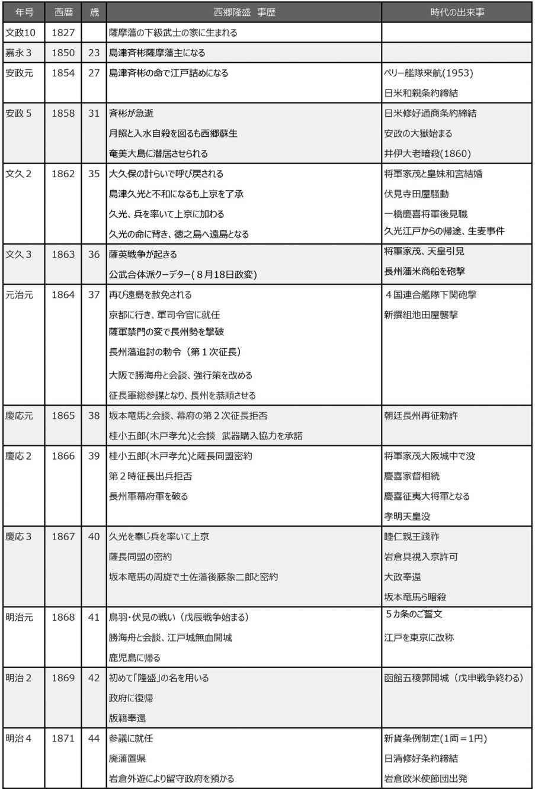

| [明治150周年記念] 名著から問題を読み解く! 明治から日本の未来を考える (1) 明治人物誌[1] (impress QuickBooks) | |
| 平田 周三 | |
| 株式会社インプレス (2018) | |
明治を輝いていた時代として回顧するのではない。
明治から日本の未来を考えるのだ！
電子書籍全集『明治から日本の未来を考える』は、明治に関連する50冊の本を縮約(各冊約1万字)で読み、明治が何であったかを理解し、そこを原点にして日本の未来を考えようという企画である。
明治に関連する複数の本を同時に読むことで、１冊の歴史の大書を読むのとは違った風景が浮かび上がってくる。現在もなお、明治が直面したのと同じ問題(韓国、中国、ロシア、アメリカ、国際関係、天皇制、憲法、財政など)に向き合っていることがわかる。
明治は未完なのである。
明治は現在もまだ続いている。
いま、われわれがこれらの問題にどのように向き合い、対処すべきかは、明治の中にその解答があるといえよう。
明治150年にあたり、明治を輝かしい時代として振り返るのではなく、明治の地点に立って現在に至った道程を眺め、日本の未来を考えることこそ意味があると信じる。
それには、人からその結論を聞くのではなく、原典を読んで浮かび上がってくる自分自身のイメージをもとに自ら考えることが大切であろう。
平田 周三
吉田松陰
川口雅昭 著
致知出版社
2011年9月
ISBN：9784884748906
目次紹介
第1章 兵学者・吉田松陰の誕生
第2章 亡命の波紋
第3章 米国艦隊来航の衝撃
第4章 「墨夷膺懲」作戦
第5章 下田事件の顛末
第6章 野山獄の松陰
第7章 幽囚室での教育
第8章 国家観の確立
第9章 松下村塾と塾生達
第10章 草莽崛記
第11章 決別の時
原著者紹介
川口雅昭 (かわぐち・まさあき)
川口雅昭氏は、18歳のときから40年間も、吉田松陰の研究を続けてきたという人である。その研究の成果がこの1冊に込められている。広島大学大学院教育学研究科博士課程前期終了。山口県内の高等学校で教鞭をとった後、山口県史編さん室専門研究員などを経て、1998年岡崎学園国際短期大学教授、2000年より人間環境大学教授となり、現在に至る。1953年山口県生まれ。
山口県史編さん室時代から吉田松陰に興味を抱き、広島大学で松陰研究に一生を捧げようと決心する。これまでに数多くの吉田松陰に関する著作がある。その中でも、本書は著者が力をこめて書き上げた吉田松陰の伝記である。著者の学会論文、史料をもとに書き下ろしたとあとがきで述べている。
要旨
生い立ちからその死に至るまでの29年の吉田松陰の伝記である。松陰が書いた書簡の原文(現代語訳)を数多く引用しながら、松陰の行動と思索の遍歴を年を追って説明する。
貧乏な下級武士の家に生まれながら、学問好きの父、叔父から厳しく教えられ、松陰をこよなく愛する家族に支えられて、松陰は思う存分、活動することができた。江戸、長崎や熊本、東北への遊学見聞旅行により、松陰は各地でいろいろな学者に教えを乞い、多くの知己を得、見聞を広めた。
幼少の頃より教えられた尊王思想は、水戸で開眼し、ペリー率いる米艦隊の浦賀来航により火がつき、日本が西洋列強の前に侵略されるという危機感を強める。幕府が朝廷の認可を得ぬまま日米修好通商条約を締結したことにより、その怒りは頂点に達し、違勅条約を結んだ老中間部詮勝の刺殺を企てた。長州藩はもちろん、信頼していた高杉晋作と久坂玄瑞ら門下生からも諌められ、彼らを破門にするなど過激な行動に走った。折からの安政の大獄により、幕府から取り調べを受ける身となり、1859年(安政6年)、斬刑を宣告され、29歳の若さでこの世を去った。
原著者は、克明に資料を調べ、いくつかの点で定説が正しくないことに気づいた。
下田に停泊中のペリーの米艦に乗り込んだ下田事件は、松陰が海外への好奇心から密航を企てたとされるが、それはあくまで米艦に近づくための口実で、ペリーの刺殺が目的だった。
現在も、ともすれば、幕末期における日本型原理主義の代表の一人のように見られる傾向があるが、西欧についてかなり柔軟な思考ができる人だった。
また、老中間部 詮勝 襲撃に関する松陰の役人の取り調べでの返答が、「藪蛇だった」とする評があるが、これを語ったときの松陰の心境は、自らの誠を信じ、確信に満ちたものだった。
役人らに話すとき、周囲に迷惑や疑惑が起きないよう、すべて自分の意志によって一人で行ったと告白した。友人たちと交わした約束は、たとえ自己の不利を承知であっても果たさねばならないと考えた。逆の仕打ちを他から受けても不満を言わず、誠と義を貫くことが武士としてのあるべき姿だとした。
コメント
原著は、400ページに及び、あらゆるところに、松陰が書いた書簡が現代語に訳されて引用されている。その念入りさは、原著者がライフワークとする研究の成果を問うだけのものはある。縮約でこれを伝えることは不可能だが、著者の思いが伝わるよう心掛けた。吉田松陰が何を考え、なぜ過激な思想へと走ったかが理解できるよう工夫した。
原著の表紙の帯に「松陰が生まれていなかったら、この国はどうなっていたのか？」と書かれている。歴史に「もし」はないが、長州藩の尊王攘夷の志士は育っていなかった可能性は強い。長州藩の行動がなければ、倒幕はもっと遅れたか。
原著にある吉田松陰の書簡を読めば、当時の緊迫した空気を感じることができる。ぜひ原著でそれを体感されるようおすすめする。
縮約
１．吉田松陰はこのように生きた
幼少の頃
吉田松陰(通称：寅次郎)は、1830年(天保元年)8月4日、長州藩の下級武士、杉百合之助の次男として、長門国萩の東郊松本村(現在の山口県萩市)に生まれた。父は貧しい武士(家禄26石)で、農業を中心とした生活をしていた。百合之助は、知性のある人物で、当時の国家や社会のあり方を憤り、真剣に学問をしていた。彼は皇室をたいへん尊敬していた。叔父の玉木文之進は、さらに強い問題意識を持っていた。二人は、松陰と彼の兄の梅太郎に、農作業をしながら、田畠の傍らで教えた。皇室や楠木 正成 に関するテキストを素読させた。教え方はひどく厳しかった。
1834年(天保5年)、4歳の松陰は叔父吉田大助の仮の養子となった。吉田家は代々、山鹿流兵学師範として、毛利家に仕えていた。翌年、大助が死去したため、松陰が吉田家を継ぐことになったが、幼少だったため、実際に教えたのは代理の者だった。松陰が初めて藩主毛利敬親 の前で講義をしたのは1840年(天保11年)で、まだ10歳だった。敬親はその素晴らしさをほめた。松陰が18歳のとき、長州藩における山鹿流独立師範となった。
松陰が当時の世界情勢について知ることになったのは、長州藩を代表する洋学者だった山田亦介 から長沼流兵法を学び始めたときである。山田が36歳、松陰は15歳だった。初めて会った日、山田は松陰に次のようなことを語っている。
「近頃、西欧諸国は国力が充実しており、アジアを侵略している。インドがまず侵略され、清国がその餌食になった。その勢いは止まらず、琉球、そして長崎の様子もうかがいに来ている。人々は心配し、防御を最優先と考えている。しかし、彼らがアジアを侵略するのは、必ずその中心にすぐれた人物がいないからだということに気づいていない。すぐれた人物がいれば、その国は強く盛んになり、また、国が強ければ敵はいなくなる」
山田は、松陰に、すぐれた才能をさらに磨き、その名が世界に聞こえるような人物になれと励ました。松陰は、この時点(1845年・弘化2年)で、アヘン戦争の情報を得ていたはずである。
遊学
1850年(嘉永3年)、松陰は、九州の平戸に旅した。彼の初めての藩外遊学(自費遊学)だった。長崎にも寄り、約4カ月間の滞在中に、100余名を超す学者や同年輩の藩士らに会い、20数冊に及ぶ書籍を抄録している。
そして翌年3月、藩命に従い江戸に旅立った。江戸における学問の高さに直面し、苦悩していた様子が、兄の梅太郎に宛てた手紙に書き遺されている。しかし、ひと月に30回くらいの勉強会に出席し、勉学に励んだ。当時の一級の学者・佐久間 象山 に入門した。象山は40歳、松陰は21歳だった。
江戸で公的な遊学の身だった松陰は、突然、水戸、仙台、米沢、会津など東北地方の巡視を藩邸に願い出た。平戸遊学のときに親しくなった肥後藩の宮部鼎蔵に再会し、彼から海防上最も重要と思われた東北地方の巡視を提案されたことがきっかけだった。間もなく、藩からの許可が下りた。
しかし、出発間際になって、藩からの関所通行許可書(過所 )が必要なことを知った。それが交付されるには時間がかかる。松陰は、あえて、それを持たぬまま東北に旅立った。それは脱藩を意味する。なぜ松陰は国法を犯してまで巡視に踏み切ったのか。決まりを破ることの結果はわかっていたはずである。友人との約束を破りたくないという気持ちがそれを上回ったのであろう。
水戸から会津、佐渡、さらに北上して青森まで行った。約4カ月の東北旅行の期間に、松陰は90余名の学者らを訪ねて、教えを受けている。とりわけ大きな影響を受けたのは、水戸で水戸学の権威から、皇国について教えられたことだった。ここで、長州藩という意識に加え、日本＝皇国という意識を強くした。それはその後の松陰の人生を決めるほどのものだった。
しかし、この遊学は脱藩であり、藩の法を犯した罪で罰せられることになる。
ペリー艦隊を見る
藩から命じられて松陰は、実家の杉家で蟄居させられた。しかし、この萩での蟄居生活から、彼の教育活動が始まった。禁を犯した罪により、長州藩士としての籍をけずられ、浪人となった。しかし、彼の才能を惜しんだ藩主毛利敬親は、10年間の諸国遊学の願いを出すよう指示した。松陰にとって、これほどの感激はなかった。
1853年(嘉永6年)1月、松陰は江戸をめざして萩を立った。そして、江戸滞在中に、あの衝撃的な事件が起きたのである。同年6月、ペリーに率いられた2隻の蒸気船と2隻の帆船からなる米国艦隊が浦賀沖に現れた。松陰はすぐに浦賀に向かい、米国艦船を見た。浦賀周辺で細かく情報を集めた。外国船が許可なく江戸湾に入っていたことに強い憤りを抱いた。師事する佐久間象山も憂いていた。松陰は、日米の間に一戦が起きるのではないかと見ていた。
浪人の身でありながら、松陰は藩主毛利敬親に上書を提出した。米国の無礼に対して、幕府はその先頭に立ち、天皇の名において国として戦わねばならないとしている。しかし、長州藩の江戸藩邸では、松陰の行為が出過ぎたものとして非難した。この後、松陰は肥後藩の仲間との関わりを深めていった。
西遊
1853年(嘉永6年)9月、突如、松陰は長崎に行くことを決めた。熊本に着いて、肥後藩士の宮部 鼎蔵 と共に横井 小楠 を訪ねている。小楠は、ペリー総督がわが国の国法を犯し、無礼な行為を行ったことは断じて許されないことだとし、彼らの武力に屈してはならないという意見を持っていた。このとき、小楠が提唱する「墨夷膺懲」の実行を松陰に語り、ペリー刺殺の計画への参加をうながしたものと思われる。
このとき、長崎には、日ロ和親条約交渉のため、プーチャーチン率いるロシア艦隊が停泊していた。松陰は、これに乗船して密航を考えたが、宮部の意見を入れ、その計画を捨て、ペリー刺殺に目標を変えたというのが定説である。しかし、実際は、「墨 夷 膺 懲 」は肥後勤王党の仲間が考えた策で、ペリーの来航に憤慨していた浪人の松陰を抱き込んだ。松陰は、ロシア船による密航ではなく、彼らに呼び寄せられて長崎に行ったとも考えられる。
松陰は年末には、江戸に戻っていた。1854年(安政元年)1月、米国艦隊が再び江戸湾口に姿を見せた。
下田事件
1854年(安政元年)3月3日、横浜で日米和親条約が締結された。幕府は、小楠が言った最も下劣な策を選択した。ここから下田事件が始まる。松陰らは、同志と共に詳しい情報を集め、ペリー刺殺のチャンスをうかがっていた。米国艦船が下田に向かうのを見て、同志の一人金子重之助と二人で、追いかけるように下田に着いた。18日の午後だった。米艦に近づく方法を思案しながら時が経ち、28日の午前2時、昼間見つけておいた小舟に乗って、苦労しながらもようやくポーハターン号にたどり着いた。制止をかいくぐってタラップに飛び乗ったが、乗ってきた小舟は流されてしまった。舟には二人の太刀とその他の荷物があった。
乗船した目的が米国への密航だと説明した。船上でのやりとりは、割愛する。結果として、申し出は断られ、翌朝、米水夫のあやつる舟で岸に送り返された。ペリーを刺殺するという目的は果たせず、近づくための口実とした密航もいずれ自由に海外に行ける日が来ると諭されて終わりとなった。
二人が密航を企てて、米国艦に乗り込んだという知らせはすぐに幕府の役人の耳に入った。二人は捕えられ、尋問を受けた。幕府側は、この行動の背後に、佐久間象山らの共謀があったとにらみ、厳しく追及したが、松陰はついに墨夷膺懲のことはまったく口を割らなかった。あくまで個人的に海外に行きたいという思いだったと主張し、幕府の役人もこれを認めて、決着させた。
野山獄幽囚
1854年(安政元年)9月、松陰と金子は、捕らわれの身として萩に護送された。松陰は、長州藩の野山獄に入れられた。病身だった金子は平民の岩倉獄に収監されたが、翌年1月、病死した。24歳だった。
野山獄での松陰の生活は読書、思索、著述などを中心とするものだった。獄中で松陰は数冊の本を書いている。ここに書かれていることは、渡海のことばかりだが、しかし、松陰の関心が天下国家のことだったことが、文章の端からうかがわれる。
松陰の心配は、日本に対する外国の野望だった。彼らは、野望を隠して、最初は慎み深い態度で接し、国法にも従い、民衆の心をおだてながら、わが国力を細かに調べ、やがて弱点をつかみ野望を現すだろうと、その中の一書『幽 囚 録 』に書いている。その想像には、清国が属国化されていった背景の知識があった。そのためには、軍備や軍隊の訓練よりも、民心の維持(国民の精神)こそが優先されるべきことを述べている。軍事を習わせ、外国語に精通させ、優秀な学生を諸外国へ派遣し、書物を買い求めさせ、学問を探求させることの必要性を説いている。松陰は次第に、教育へと志向を強めていったのである。
松下村塾
野山獄における教育活動は、同囚が松陰に時事問題について質問したことから始まった。翌年には、獄中で『孟子』を講義した。
1855年(安政2年)12月、松陰は病気保養を理由に、出獄が許され、実家での蟄居となった。三畳半の幽囚室に閉じこもって、読書、思索の生活を考えていたが、兄梅太郎の提唱で、獄中で行っていた『孟子』の輪読会が家族を相手に再開された。それはやがて松下村塾につながっていく。1857年(安政4年)には、外からの入門者が増え、久坂 玄瑞 、高杉晋作など、続々と入塾した。松陰の教え方は、学校形式でなく、個人個人の立場、環境、学力に合わせて、一人ひとりに中国古典の古事などを引用して講義した。
松陰自身が読んだ本は膨大である。「野山獄読書記」によれば、1856年(安政3年)の読書は505冊、1857年(安政4年)は10月までに380冊余の書を読んだことがわかる。内容的には、『宋 元 資 冶 通 鑑 』、『漢 書 』、『史記』など中国の歴史書が中心だった。和書では、『日本外史』、『古事記』、『太平記』、『新論』、『弘道館記述義』などのほか、本居 宣長 の『古事記伝』、山鹿 素行 の『中朝事実』、北畠 親房 の『神皇 正統記 』もある。これらの本から、対西欧交渉のあり方、わが国の国体観、天皇観などを学んだものと思われる。
蹶起
松下村塾は、一般的には、家塾、いわば寺子屋のようなものだったとされるが、一方で政治集団としての顔を持っていた。その塾生たちが討幕のみならず、「明治日本」創造の主力勢力の一つとなった。
1858年(安政5年)に入り、松陰の動きが活発になった。「日米修好通商条約交渉は、国威を失わないように、諸大名と協議して決定せよ」という朝廷の沙汰書が下されたことが一因だった。毛利敬親は、尊王攘夷を表明していた。水戸藩などが井伊 直弼 襲撃を計画していることも耳にしていた。松陰は、機が熟してきたと実感した。藩政府、門人らに、尊王攘夷の蹶起 を促した。
藩政府は、松陰の過激を心配した。監視を強めており、その年の12月、野山獄への再入獄となった。松陰は、同志や門人たちが動いてくれると信じていた。しかし、最も信頼していた高杉晋作、久坂玄瑞、飯田正伯 、尾寺新之丞、中谷正亮 の門弟5人が血判した手紙を読んで、松陰は激怒した。その手紙の内容は、松陰が唱える蹶起が江戸の情勢から見て時期尚早であると松陰を戒めるものだった。
年が明けても、天皇の勅諭を無視し、親米政策を進める幕府に対する怒りと、日本の将来を憂う松陰の気持ちは収まらなかった。孤立感を深めながらも、門弟を動かし、尊王攘夷の実行に期待した。頭にあったのは、米国を相手に、全国民の発奮による国民総力戦・ゲリラ戦の先駆けとなるべき志士の蹶起だった。
死刑
1858年(安政5年)4月に大老に就任した彦根藩主井伊直弼は、6月、天皇の詔勅を得ぬまま日米修好通商条約に調印した。これに反対するため、水戸藩は朝廷に働きかけた。これを知って、直弼は強権をもって反対派の弾圧に向かった。安政の大獄の始まりである。1859年(安政6年)6月までに逮捕された公卿・志士らは40余名を数え、最終的に連座した者は100名を超えた。長州藩へも、松陰を江戸に送るよう命令がくだった。松陰はこれを喜んだ。高杉晋作は、幕府の取り調べで、長州藩に不利となるようなことを暴露するのではないかと心配した。これに対して松陰は、恩ある藩に背くようなことはしないと明言し、同志たちを安心させている。
幕府による取り調べは、7月から4カ月に及んだ。10月16日、松陰は評定所に呼び出され、死罪の宣告を受けた。最後に、その思いを『留 魂 録 』として書き残した。その書き出しに、「身はたとひ武蔵の野辺に朽ちぬとも留置まし大和魂」と詠んだ。
1859年(安政6年)10月27日、松陰は29年の生涯を閉じた。
２．吉田松陰の国家観
10歳で藩主毛利敬親に『武教全書』を講義するほどの知力があった松陰だが、その読書力、執筆力は驚くものがある。しかし、ただ書を読んで学問をする学者ではなかった。その探究心は、どこに旅してもその地の学者に会って教えを乞い、誰とでも議論した。早くから、清国が外国からの侵略を受けていたことも知っていた。
わが国が西洋の前に置かれている状況に危険を感じ、その防衛のために何をせねばならないかを思索した。だが、それは思索に終わらなかった。松陰は、強い信念を実行に移したくなる行動の人でもあった。それは志の強さゆえに、しばしば過激に走る恐れがあった。しかし、日本人の特性とする義を重んじる人でもあった。大恩ある藩主に忠実であろうとしただけでなく、他藩の仲間との約束を守らねばならないと思い、裏切ったり、相手を不利に落し入れたりすることはしなかった。
松陰の思想の根底にあったのは、天皇を中心とする国家だった。その思想は、幼少の頃、父百合之助と叔父玉木文之進からの教えで、心に刻まれていた。それが明確な形となったのは、東北に旅して、水戸を訪れ、わが国の歴史研究について知識を深めたことが大きく影響した。天下が天皇のものであるとする理念を持ち、天皇があって幕府が存在するという考えだった。天皇の勅諭を無視して、日米修好通商条約を結んだ幕府の態度が許せなかった。
しかし、松陰の考えは、幕府を戒める諌幕であって、倒幕ではなかった。ただ言葉だけではだめで、誰かが立ち上がって見せることを必要としていた。その犠牲に自分がなってもいいという覚悟を固めていた。
ひとたび米国と日米修好通商条約を締結した以上、これを一方的に破棄するのでは、日本人として義が立たないという考えを松陰は持っていた。話し合いによって、日本がしっかりと民力が向上し、体制が整ってから改めて条約を結ぶので、条約をいったん白紙に戻して欲しいと幕府は交渉し、それまでに人材を育成し、民意を向上させておくべきだという考えだった。
当初は、貿易までも有害としていたが、余剰物資をわが国に必要なものと交換する商行為を是とするように、考えは次第に変わっていった。それとともに、有能な人材の育成の急務を唱える姿勢を強めていった。
松陰の思想の根底にあった国家観と日本が西洋列国の侵略の危機意識は、その生涯を貫いている。しかし、幾度かの変化の節目があった。1度目は、東北視察(水戸学との遭遇)、2度目は、米国艦隊の浦賀来航、3度目は、日米和親条約締結、そして4度目は、幽囚中の西洋観の変化だった。水戸学の学者から教えられて皇国＝日本という意識を強く持った。ペリー艦隊を見て、日本の危機意識を強め、日米和親条約締結でいますぐ蹶起せねば国が危ういという危機感は頂点に達した。そして1957年(安政4年)頃より、西洋をただ亡ぼすべき相手とせず、交易や国交の必要性を認識するように大きく変わったのである。
３．松陰と周囲の人々
家族
松陰は、家族に大きな心配を与え、計り知れない迷惑を与えた。しかし、父、百合之助、母の瀧、兄の梅太郎をはじめ、妹と弟、そして叔父の玉木文之進らは、松陰の知能を評価し、常に味方として彼を支えた。
長州藩
10歳の松陰から講義を受けた長州藩主毛利敬親は、松陰の能力と見識を高く評価した。大きな罪を犯しながらも、常に遠くから支援した。藩主の松陰贔屓は、藩の重臣たちにも影響を与えた。松陰の過激な行動に対して、彼を排除しようとした重臣もいたが、反対しながらも松陰の考えを認め、陰ながら支えようとした人たちがいた。
とりわけ、義理の弟でもあり、松下村塾を支援した小田村伊之助は、藩と松陰の間を取り持つことに尽力した。
藩の政策の実力者であり、聡明だった周布 政之助 は、松陰の過激な行動を抑えつつも、彼の尊王攘夷の精神を高く評価していた。
同志・門人
松下村塾の数多くの門人の中で、松陰が最も高く評価していたのは、高杉晋作と久坂玄瑞だった。松陰の死後、勤王の旗をかかげ、幕府と正面からぶつかり、明治維新の実現に大きな貢献をする門人たちは、松陰の行動の手先となって動いた。
他藩の人たち
松陰の長州藩以外の人たちとの交友はすこぶる広い。九州、東北、江戸を中心に、多くの学者を訪ねて教えを受けたが、中でも洋学に詳しい佐久間象山とは深い関係になった。藩士たちとの交友を広げたが、ペリー刺殺計画をめぐり肥後藩士の宮部鼎蔵らとは、同志として心を通わせた。
４．吉田松陰の残したもの
愛国心
各藩の藩士たちが、自分の藩を拠り所とする意識しかなかった江戸末期にあって、松陰は、天皇を中心とする日本という国家意識を持っていた。自ら生まれ育った長州藩の藩主毛利敬親に忠誠を抱きながらも、さらにそれを包含する日本が西洋に侵略される危機感を当時の誰よりも強く持っていた。そのあまりに強い思いが、過激な行動に走らせることになったが、明治の日本近代国家の先駆となったのは確かである。
明治維新を実現した長州の若者
日本を西洋と肩を並べられる国にするには、人材育成の必要を強く感じていた。人に教えることが好きだった。学問をするのに、農民、町人、そして武士という差別はないと考えていた。一方で、行動を伴わない学問は意味がないと断じた。
松下村塾の門下生から、明治維新を興す志士たち、明治新政府の要人となる人材が輩出されたことは、松陰の功績と言えるであろう。
朝廷を頂点にし、その命を受け、各藩の代表たる徳川幕府が施政を司るという松陰の構図だったが、明治の時代の成立に関わることはなかった。しかし、近代国家日本を形成することに大きな役割を果たした桂小五郎(木戸 孝允 )、伊藤博文、山県有朋らは松陰から啓蒙されて、成長した。日本という国を守らなければならないという松陰の思想は明治に引き継がれたのである。
大久保利通と明治維新
佐々木克 著
吉川弘文館
1998年7月
ISBN：9784642054454
目次紹介
明治維新における大久保利通の位置
公武合体
王制復古
明治政権の成立
大久保内務卿の時代
原著者紹介
佐々木克 (ささき・すぐる)
佐々木克氏は、明治時代を専門とする歴史学者。京都大学名誉教授。秋田県大仙市出身(1940年11月23日 - 2016年7月31日)。立教大学時代に大久保利謙(大久保利通の孫)に教えを受けた。国立国会図書館司書補佐として、憲政資料室において「三条実美関係文書」や「広沢真臣関係文書」の整理や目録編纂を行う。1977年に京都大学人文科学研究所助教授となり、1988年同大学教授に就任、2004年に定年退官した。幕末・維新から自由民権期にかけての政治史や人物史を中心に多数の著書・論文を執筆したほか、『大津市史』など自治体史編纂にも参画した。また2000年から2004年まで明治維新史学会会長を務めている。
要旨
明治維新は、複雑極まりない時代の流れであり、多くの人たちが関わって実現したものである。しかし、あの時期に、あのような形で徳川幕府を終わらせ、維新を実現させる功のあった人物を1人あげよと言われて、「それは大久保利通だ」としても誰も異論を唱えないであろう。
維新の立て役者とされる西郷隆盛も、長州の中心人物、木戸孝允 (桂小五郎)も、王政復古の公卿のエース岩倉具視 も、尊王攘夷から維新までの重要な期間に、いずれも行動を禁じられた空白期間があった。西郷は2度にわたる島送りで約5年間幽閉されていたし、木戸は1863年(文久3年)の公武合体派による8月18日クーデターで長州藩が京都から追放されて以来王制復古が実現するまでの約4年半、表立った行動はできなかった。岩倉も同クーデターにより洛北岩倉に隠棲を命じられて以後1867年(慶応3年)の春まで洛中への立ち入りを禁止されていた。この間、一人大久保だけが無傷で活躍したのである。
大久保が鹿児島を出て、初めて尊王攘夷で渦巻く京都に行ったのは、1862年(文久2年)、彼が32歳、明治維新までわずか6年前である。1868年(明治元年)明治新政府が誕生。岩倉具視を団長とする欧米視察から戻ったのが1873年(明治6年)、暗殺されたのが1878年(明治11年)。このわずか10年間に、廃藩置県を実施し、朝鮮問題を処理し、内戦を片付け、殖産興業を前進させて近代国家日本の政体を決定づけるという大仕事をやってのけたのである。
大久保の人物像は、非情、冷酷、専制、官僚型などマイナスイメージで語られることが多い。しかし、20年近くトップリーダーであり続けたことは、非情や冷酷、権力欲で成し遂げられたとは思えない。しかも、大久保には彼を支える組織がなかった。常に主導者であり続けられたのは、その政治能力に加えて、人に信頼されるものがあったからにほかならない。
国家のためと決意したら、確固として動かない人間だと、三条実美と岩倉具視は大久保を評している。新国家をつくるというただ1つの目標をめざして、どのように激動の時代を生き抜いてきたのか、明治維新実現までと、新国家創生の時代に分けて文献の検証をもとに詳述する。
コメント
大久保利通を「英雄」と言う人はいない。現実主義者であり、実務家である。しかし、山県有朋や伊藤博文のような策謀家ではない。明確な目標を定め、組織を動かすためであれば、あえて地位を捨てて局外に立つ。権力に驕ることは一度もなかった。壁にぶつかることはしばしばだったが、一度も勝負に負けたことはなかった。歴史が生んだ不思議な人物である。
一人の人物が生きた人生を手短にまとめて書くことは容易である。しかし、出くわすさまざまな難題をどのように克服できたかは、それぞれの事件について詳しく知るほかない。それは縮約では不可能である。原著にはそれが生々しく語られている。だが、それらの事柄が真実であるかは、歴史家の精力を尽くした地道な調査研究なくしては明らかにされない。それがあるからこそ、事実だけをストーリーとして話せる。
著者は、大学時代、大久保利通の孫にあたる先生から明治の時代について教わった。まだそこに明治が生きていた。
縮約
１．明治維新をなし遂げた男
32歳にして初めて京都に行く
大久保利通は、1830年(天保元年)、薩摩藩の下級武士の家に生まれた。父が遠島の処罰を受け、極貧の生活を強いられた。幼友達の西郷隆盛は、早くから藩主島津斉 彬 に見出され、尊王攘夷に揺れる中央政界で活躍する中、大久保はさしたる役職にもつけず、激動の時代を藩の仲間と研鑽をかさねる日々が続いた。斉彬亡き後、異母弟の島津久光に大久保は近づき、信頼を得て、歴史の舞台に登場してくるのは、1862年(文久2年)、すでに32歳になっていた。
1861年(文久元年)、久光は大久保を藩政中枢の小納戸に抜擢した。それまでも大久保は幾度となく上京を勧めていたが、久光は慎重だった。しかし、安政の大獄で幕府から遠ざけられていた長州藩が、天皇と将軍の両方から公武間の周旋を求められることになり、久光も立ち上がった。上京の準備を進めたのは大久保だった。1862年(文久2年)初め、久光は1,000人の兵を連れて京に向かった。大久保にとって初めての上京だった。
大久保の助言で、西郷が奄美大島から戻された。しかし、西郷は、久光の上京が不相応であり、見込みのないことだと批判した。さらに命令を無視し、急進尊攘派の集まる大阪に向けて出発し勝手な行動を起こした西郷に対して久光は怒りを爆発させた。大久保も久光の不興を買い、これで万事休したと覚悟したが、西郷を再度島送りにすることで事件は落着した。
公武合体に向けて奔走
久光は、兄の島津斉彬の思想を継いで、王制復古をめざしながら開国を進め幕府の体制を改革していく考えだった。折しも中央政界では、公武合体が進んでいた(1860年・万延元年、皇妹和宮 の降嫁勅許を幕府に内達)。攘夷の朝廷と開国の幕府の間の調整に、大久保は公卿たちの説得と幕府への建議のため奔走した。
1862年(文久2年)には、将軍家茂と和宮の婚儀が行われ、久光が考えていた一橋慶喜 の将軍家 茂 の後見職就任も実現した。1863年(文久3年)、将軍家茂が上洛し、家光以来228年ぶりの天皇の引見となった。その一方、薩摩藩の久光が軍隊を率いて上洛、攘夷の天皇の信頼を得たことに、尊王攘夷派は刺激された。天皇をめぐる長州藩と幕府の争いが激化し、幕府の取り締まりが強化された。京都の町は不穏な空気に満たされていく。
朝廷、幕府、諸藩、尊王攘夷の志士たちの関係は複雑にからみ合い、流動的に展開した。その中にあって、久光の存在が大きくなり、大久保も中央政界で確固たる地位を築いた。しかし、幕府内でこれまで官職も実績もない久光に反感を持つ大名も多かった。久光と協調路線をとっていたはずの将軍後見職の慶喜も、朝廷を操る久光の批判を始めた。
長州の敗北
公武合体により、幕府は表面的に攘夷の姿勢をとらざるをえなかった。時期到来とみた長州の志士たちが活気づく。三条実(さね)美(とみ)ら若手の公卿らと手を結んだ。その突出を恐れた孝明天皇は突如、長州藩と組む公卿達を排除する行動に出た。8月18日のクーデターと呼ばれる(1863年・文久3年)。このクーデターは大久保が計画したと思われる。
巻き返しを恐れて薩摩藩と会津藩は、朝廷を守るという理由で長州藩に対する警戒を準備した。新撰組の池田屋襲撃がきっかけで行動を起こした長州は、蛤門で会津、薩摩など幕軍と衝突。戦いは1日で終わった。敗北した長州軍は、久坂玄瑞をはじめ多くの犠牲者を出し、三条実美ら尊王攘夷派の公卿を連れて長州へ逃げ帰った。攘夷で味方だと信じていた薩摩の裏切りに対する長州の恨みは根強く残ることになる。
この事件以後、政局は大きく転換する。朝廷は、長州藩追討を幕府に命じた。慶喜はこれを受けた。指揮官には西郷が就任した。最初は徹底的な攻撃を考えていた西郷だったが、勝海舟に会って考えを変えた。幕府内部がすでに腐敗している事実を知らされ、大局から考えて長州を攻め滅ぼすことの無意味を教えられた。勝の話に感激した西郷は、長州まで行き、高杉晋作、山県 有 朋 と会い、恭順を説得した。その結果、禁門の変の責任は長州藩自身で処理することを命じ、戦わずして問題を解決した。敵陣に自ら出かけた勇気と、戦わずして成果をあげた西郷への評価は高まった。西郷から勝との会談内容の報告を受けていた大久保に異論はなかった。もともと大久保は、長州が連合艦隊の攻撃を受けて苦境に立っている今、軍勢を差し向けるべきでないとの考えだった。西郷はまだ薩摩藩の立場や長州藩との力関係など、「藩」を意識する面が強かったが、大久保はもはや一藩の利害関係や愛憎などにはこだわっていなかった。
倒幕へと急旋回
征長の攻撃を回避できた長州は、三家老の切腹など幕府の要求に従い責任処理を果たした。その一方で、4国連合艦隊の攻撃を受けて、武力の近代化の必要性に目覚めた高杉や山県有朋らは奇兵隊の軍備強化に向かった。その動向を察知した幕府は、メンツにかけても長州藩を放置するわけにはいかず、諸藩を結集し、長州藩を屈服させようとした。しかし、長州再征を支持したのは、彦根藩ほか3小藩にすぎなかった。
大久保はもとより再征に大反対であり、幕命に従うつもりはなかった。しかし、朝議は一橋慶喜の強硬な主張に逆らえず、長州再征を決めた。大久保は、幕府はもはや滅亡するほかないと読み、理念のない朝廷も見限ることを決心した。朝廷と幕府と決別し、新しい統一国家建設の構想を描くことになる。
1866年(慶応2年)、京都の薩摩藩邸で、薩長両藩の間で密約が結ばれた。薩摩藩は西郷と藩重役小松帯刀、長州藩からは木戸孝允が出席、坂本龍馬が立会人となった。密約の内容は、長州藩が幕府の長州藩処分命令を拒否し、薩摩藩は長州藩の政治的復権を保障するものだった。大久保はこのことを久光と長州藩の要人に報告した。
長州に攻め込んだ幕軍は苦戦を強いられた。そのような中、将軍家茂が大阪城中で病死し、慶喜がその家督を継ぐことになり、長州藩と休戦を決めた。それから、実質4カ月半の将軍空位を経て、12月になって征夷大将軍に任じられた慶喜が将軍職についてから、わずか20日後の1866年(慶応2年)12月25日、孝明天皇が没した。こうして、この年はあわただしく終わるのである。
1867年(慶応3年)、事態は大きく動いた。島津久光(薩摩藩)、松平慶 永 (福井藩)、伊達 宗 城 (伊予宇和島藩)、山内 容堂 (土佐藩)の4侯が上京して意思統一のための会談を行った(4侯会議)。その決議をもとに徳川慶喜との意見調整を図ったが、最終的に慶喜と意見は折り合わなかった。
この会談の直後、大久保は、久光、小松、西郷ら薩摩藩の首脳部ととともに、倒幕と王政復古の同時的達成が最も重要だとし、軍事力の発動もやむをえないと決意した。
土佐藩と薩摩藩が提携しようとする会議も坂本龍馬が仲介して京都で開かれた。しかし、土佐藩では武力発動や倒幕は以ての外という山内容堂の意見がこれを止めた。約束が違うと西郷は抗議する一方、なまぬるい大政奉還運動を見捨て、武力発動に向けて行動することを大久保と誓った。
西郷は長州を訪れ、武力倒幕参加を求めた。大久保は、前年から朝廷改革の準備を進めていた岩倉具視らと協議し、岩倉から王政復古の声明と朝廷組織に関する草案のほか、錦旗を作る提案を受けた。これは岩倉のブレーンである国学者の玉松操が起草、起案したものである。
王政復古
その直後、倒幕の密勅が大久保と長州の広沢真臣に手渡された。この密勅は天皇が関与して作られたものではなかった。しかし、それを知った徳川慶喜は、倒幕派の動きに先手を打って大政奉還を願い出た。慶喜は合議制＝公議政体をめざし、自分が占めるポストを考えていた。
公議政体は、有力諸侯による合議を国是とする考えで、土佐藩の後藤象 二郎 らが主張する意見だった。これに対して大久保は、公議政体を否定はしていないが、朝廷と幕府両方の大改革＝王政復古が先決だという考えを持っていた。
年も終わりに近づいて、クーデター決行が明確になってきた。慶喜はすでに将軍職の辞表を朝廷に提出して、倒幕派の攻撃を避けようと計っていたが、大久保の考えは揺るがなかった。土佐藩でも、板垣退助を筆頭に、倒幕派の勢いが強くなっていた。1867年(慶応3年)12月9日、ついに王政復古の宣言がなされ、大久保がめざしてきた、公武双方の大改革が実現した。
２．明治の新国家のはじまり
新政権の発足
1867年(慶応3年)暮の王政復古の宣言で明らかにされた新政権の組織は、公議を基本精神とする総裁・議 定 ・参与の三職制だった。総裁には有栖川宮 熾 仁 親王。議定には、公卿が多数を占め、5人の大名(尾張藩徳川慶勝、越前福井藩松平慶永、芸州広島藩浅野茂 勲 、土佐藩山内容堂、薩摩藩島津忠義 )が選ばれた。参与は、岩倉具視ら公卿4人と、薩摩、土佐、芸州、尾張、越前の5藩から3人ずつという構成になった。大久保は少し後れて参与に就任したが、長州藩が入るのは翌年である。
しかし、議定の山内容堂は、このクーデターに疑問を述べ、慶喜をこの席に加えるべきだと主張した。議定の松平慶永も容堂の発言を支持した。
慶喜は反撃に出ようとしていた。政府内では公議政体派の発言が強まり、岩倉具視までがぐらついてきた。大久保は孤立した。
鳥羽・伏見の戦い
こうしたとき、江戸薩摩藩邸を徳川強硬派が焼き討ちしたとの報が大阪城に届いた。西郷が、江戸薩摩藩邸に浪士たちを集め、市中の撹乱工作を行った結果、徳川方はたまりかねて報復行動に出たのである。大阪城では会津藩士や徳川方兵士が激昂し、徳川軍勢約1万余が伏見と淀の間に陣取った。慶喜はこれを制止できなかった。
大久保は戦争を覚悟した。西郷もそのつもりだった。政府、朝廷には、平穏無事を望む者ばかりで、頼りにでききる者はいない。大久保は、三条実美と岩倉具視に対して必死に決断を迫った。そして、1868年(明治元年)1月3日、鳥羽・伏見の戦いが始まった。薩長主体の政府軍には、この戦争に勝つことによって新国家建設が可能になるという信念がみなぎっていた。それに対して徳川勢には、統一した作戦もなく、無残な敗北を喫した。
大久保の決断が新政府を救ったのである。この結果、慶喜に同情的だった公議政体派は力を弱め、大久保らの討幕派が発言力を強めた。朝敵追討は西郷にまかせて、大久保は政府の基礎確立に精力を注いでいく。
新政府の制度確立
1869年(明治2年)7月、政府は官制を改革し、2官(神 祇 官 、太 政 官 )、6省(民部、大蔵、兵部、刑部、宮内、外務)を設置した。その後すぐに、民部(民政)と大蔵(財政)を合併して民蔵省という大官庁にするなど改造が繰り返された。大組織の民蔵省の主導権を握っていたのは、大隈重信、伊藤博文、井上馨(かおる)らだった。木戸と大隈は改革を急ぐ急進派であり、大久保はどちらかというと漸進論の立場をとった。近代化推進が先か、緊縮予算を優先するかが問題だった。
新政府の組織と人事も、試行錯誤的に手が加えられ、公卿に人材がなく、次第に行政能力のある者が中心となる一方、藩の力関係を意識するものに変わっていった。1871年(明治4年)の陣容は次のようだった。
頂点に天皇が位置し、その下に太政官(内閣に相当)があり、左大臣と右大臣が補佐する。太政官の下に参議がいる。太政官の下は左院(立法)と右院(行政)で構成され、右院は、神祇省、外務省、大蔵省、兵部省、文部省、工部省、司法省、宮内省に分かれていた。
太政官には三条実美がなり、右大臣に岩倉具視が就任(左大臣は欠員)、参議には木戸孝允、西郷隆盛、板垣退助、大隈重信がなった。右院には大久保利通、井上馨、山県有朋、後藤象二郎、伊藤博文らの名がある。左院では、後藤象二郎が議長、江藤新平が副議長を務めた。
廃藩置県への道
新政府にとって最初の大仕事は、藩主たちが所有し、治めている領地を国のものにし、国が治め、大名と藩士らが得ている年貢米(税収)を政府が取り上げることだった。この大きな既得権益をやすやすと無償で政府に引き渡すとは思えない。
新政府が最初に行ったのは、1869年(明治2年)の版籍奉還だった。大名たちが所有していた領地を天皇に奉還するというもので、理念としてこれには逆らえない。藩主は藩知事に任命され、知事の家禄の総額を藩の実収の1割に抑えることが決まった。藩士は一律に士族とされ、藩知事と藩士の主従関係はなくなった。形式的には藩の形が温存されたが、実態は急激に変わり、藩主や藩士の意識も転換を余儀なくされた。
当時、全国の総石高は約3,000万石であるが、政府直轄地は徳川から没収した約800万石にすぎない。明治3年6月の時点で、藩の数は272藩で、15万石以上の大藩15藩、5万石以上の中藩が24藩であった。
版籍奉還で地ならしをしておいて、1871年(明治4年)廃藩置県の勅書が出された。その結果、3府302県(年末には72県に統合)となった。大名たちはこれを容認し、反対を申し出るものはいなかった。人心の動揺が少なかったのは、大多数の人々が、封建制の廃止と中央集権が時代の流れであることを認めていたからであった。
岩倉遣外使節団
廃藩置県から1カ月ほどして、政府首脳による欧米視察団を派遣することが決まった。条約改正交渉を名目に、欧米各国を訪問し、各国の元首に謁見して国書を手渡し、あわせて諸国の文物、諸制度を視察、調査することを目的だった。特命全権大使に岩倉(右大臣)がなり、副使として木戸(参議)、大久保(大蔵卿)、伊藤(工部大 輔 )、山口尚芳(外務少 輔 )が参加、総勢48人となった(随行員等除く)。
1871年(明治4年)11月一行は横浜港を出航し、サンフランシスコに到着、翌年首都ワシントンに到着した。アメリカ各地で大歓迎を受け、大統領グラントにも謁見できたが、結局、条約交渉は実らなかった。アメリカからイギリスに渡り、近代工業の発達に一行は目を奪われたが、大久保は、そうした文明の発展の見学にあきたりなくなり、政治をも含めた総合的な技術として学ばなければならないと考えるようになった。イギリスと日本の近代化の差はあまりに大きい。それを縮めるにはどうすべきか、大久保は悩み弱気になっていた。フランスを経てドイツを訪れ、宰相ビスマルクに会う。ビスマルクから、小国プロシアが大ドイツ帝国として完成させるにいたる苦闘の統一課程、生まれたばかりのドイツ帝国が流動するヨーロッパの中にあっていかに苦労したか、ヨーロッパ後発国ドイツの課題について話を聞いた時、大久保は元気を取り戻した。
大久保は、ドイツに対する親近感を強め、ビスマルクへの傾倒を深めた。日本の国家目標として、統一ドイツを選ぶことを決めたのであろう。その一方で、イギリスの繁栄に強く印象づけられた。イギリスの富強とドイツ・ビスマルクの政治力で日本の近代化を達成するこが大久保の目標となったのである。
明治6年の政変
政府首脳の半数が1年以上も国を留守にしていた。留守を三条太政大臣と参議の西郷、大隈、板垣に託して出かけたが、その間、内外に多くの不都合が起きていた。対外問題では、1872年(明治5年)11月に、琉球八重山漁民が台湾に漂着し、54人が台湾原住民に殺害される事件が起きた。台湾に報復のため出兵するかどうかが問題になった。
朝鮮についても問題があった。政府は朝鮮に対して、欧米諸国と同様の近代的な国際関係にもとづいた新たな国交を結ぼうとしていたが、鎖国政策をとる朝鮮は、日本の要望を拒否した。朝鮮の態度が非礼だとし、朝鮮に圧力をかけるべきだとする意見が閣議で強まった。最も強く主張したのは板垣退助だった。西郷は、戦争となる危険性をはらむ派兵は慎むべきで、自分が非武装で渡航して朝鮮側と交渉することを提案し、大久保らが留守中の閣議で西郷派遣が合意された。最終的に岩倉大使の帰国を待つことに決まった。
国内の問題では、改革をやつぎばやに実施あるいは計画する各省と、予算の緊縮を図る大蔵省(大蔵大輔井上馨)が対立していた。留守政府は、府県裁判所の設置、公教育の実施を主眼とする学制の制定、徴兵令や鎮台の増設を含む軍事増強計画、地券の発行から地租改正実施に向けての準備などを積極的に進めた。各省は競って計画遂行に必要な予算の増額を求めた。財政の基礎確立こそが重要だと一人戦った井上だったが、ついに辞職した。政府の中枢部で意見対立と複雑な人間関係が顕著になった。
さらに国内各地では、民衆暴動があいついで発生していた。身分制度廃止や徴兵令などの急激な改革に、民衆は不満を高めていた。
三条の要請で、一行よりも半年も早く帰国した大久保だったが、夏季休暇をとるなど静観を続けた。三条と帰国したばかりの岩倉は、大久保に参議就任を要請し、最初は固辞した大久保も状況の深刻さを認めこれを引き受けた。朝鮮派遣に固執する西郷を説き伏せるのは自分しかいないと考えたのであろう。しかし、親友であり、維新を共に戦って実現した西郷との全面対決を意味するだけに覚悟が必要だった。大久保は、西郷の渡韓は、朝鮮との開戦につながる恐れが濃いとみていた。財源はなく、国内社会の不安定、着手中の政府事業への影響を恐れた。
大久保は、岩倉から天皇に奏上させ、1873年(明治6年)10月、西郷派遣の無期延期が決まった。怒った西郷は参議を捨て、鹿児島に帰っていった。江藤新平、福 島 種 臣 、板垣退助、後藤象二郎の征韓派参議がこぞって辞職した。近衛兵として天皇を守っていた薩摩兵の将兵の多くも西郷の後を追った。
３．内務卿として腕を振るう
内務卿に就任
西郷辞任から2週間が過ぎた1873年(明治6年)11月、内務省が新設され、大久保が内務卿に就任した。実体が固まるのは翌年1月だが、内務卿は実質的に首相である。大久保が内政を主導してゆくことを宣言することを意味した。
内務省は、殖産興業の推進と行政警察を柱に、戸籍、郵逓、土木、地理、測量など、これまで大蔵省、司法省、工部省が行っていた業務を移管して、官庁行政の一本化を図った。これにより、政府内外の入り組んだ対立や雑音をひとまず整理したかたちになった。
台湾出兵
1872年(明治5年)11月の琉球八重山漁民殺害事件について、台湾出兵が問題になっていた。1874年(明治7年)2月、台湾出兵方針が閣議で合意された。木戸はこれに反対した。征韓使節派遣に反対した大久保が、木戸の反対を押し切ってまで台湾出兵に賛成したのは、各地に起きていた士族層の反乱を考慮したからだったろう。とりわけ琉球漁民が殺害されたことは、琉球を属領とみなしていた鹿児島士族にとって見捨てることのできない問題だった。征韓と比べれば、台湾出兵はリスクが少なく、何よりも同胞が殺されたという大義名分が立つ。士族たちの気持ちをこれで抑えることができればという考えがあったに違いない。
いったんは出兵を思いとどまったものの、先走って西郷従道が出兵したため、大久保は自分自身で清国と決着を付ける覚悟をした。平定が終わった後、同年9月、単身、清国に行き、現地で事前に情報を集め、各国の反応を見ながら交渉を開始した。大久保は筋を通して話したが、清国側ののらりくらりとした対応に交渉は難渋した。そこにイギリス公使ウェードが仲介に乗り出してきて、清国政府を説得し、50万両の賠償金支払いで決着させることができた。ウェード公使が日清間の周旋の労をとったのは、日清開戦となった場合に、イギリスの対中国貿易が打撃を受けることを恐れたからだった。日本としては、台湾出兵が「義挙」であることを認めさせることができた。
国内で続発した反乱を抑える
台湾出兵と時を同じくして1874年(明治7年)2月、佐賀の不平士族の反乱が起きた。リーダーは江藤新平だった。大久保の行動はすばやかった。自身、全権の委任を受けて九州博多(征討軍本営)に乗り込んだ。戦いはわずか１週間で終わった。西郷に支援を頼むも断られた江藤は逮捕され、裁判が行われ、斬首された。
その後、1876年(明治9年)には、熊本神風連、福岡県秋月、山口県萩と、相次いで士族の反乱蜂起があった。さらに、税制、地租改正に反対する大規模な農民暴動も茨城県、三重県で起こった。いずれも軍隊が出動して鎮圧せねばならなかったが、大久保は内務省の情報ネットワークを通じて、各地の士族の動向をかなりの程度把握していたため、すばやい対応ができた。
しかし、農民の暴動は、原因が地租や民費の過剰な負担に原因があり、それを解決しないかぎり再発は必然であり、全国に広がる恐れがあることから、大蔵卿大隈、工部卿伊藤と相談して、減租を実行した。これによる政府の歳入減を補充するため、各省の費用の削減、官庁の統合、官員の整理や俸給のカットなど、大規模の行政改革を実施した。これらの改革を大久保の政治的基盤である内務省関係を改革の中心に置いて、反発を回避した。
西南戦争
萩の乱に際して、一般には、西郷と鹿児島士族が呼応して立ち上がるとの噂が流れていた。だが、大久保は、名義を大切にする西郷だから、人の後ろに立ち事を挙げることなどはしないと信じていた。桐野利秋らの扇動による鹿児島私学校士族の暴発は必至とする見方になっていた。ここに至っても大久保は、西郷は動いていないと信じていた。
鹿児島の私学校生徒の暴発により、1877年(明治10年)2月、西郷は「政府に尋問の筋あり」という理由で挙兵してしまった。大久保は西郷と直接会って話し合えば説得できると考えていたようだったが、西郷には正しい情報が入っていなかった。大久保の簡素な洋風の家が、豪壮な洋館であるというように伝わっていた。
激しい戦いは、終わった。同年9月24日、西郷は自刀して果てた。ちょうどこの時、上野公園を会場に、第１回内国勧業博覧会が開催されていた。出品点数84,353点、入場人員約454,000人を記録して大成功をおさめた。国産奨励と輸出振興をめざして大久保が力を入れて開催した国家的イベントだった。
４．大久保が目指した国家
大久保が目指した殖産興業
1874年(明治7年)の年末、台湾出兵問題の北京交渉から帰った大久保は、内務卿としての地位を確たるものにすることができた。廃藩置県の後の近代化をめざす改革が相次いで行われた。大久保は、内務省の施政目標に、国内安寧と人民保護をベースに、殖産興業による産業立国の実現をあげた。
欧米視察で大久保が絶対不可欠と考えたのは殖産興業、産業の育成だった。富岡製糸場に始まり、国産化の事業発展に力を入れたが、農業にも一方ならぬ力を注いだ。もう1つの課題が、累積する貿易収支赤字だった。イギリスの富強を支えているのが貿易であり、その基礎は海運にあると理解していた。1875年(明治8年)、大久保の政府は、岩崎弥太郎の三菱汽船会社に資金の援助(政府所有汽船の無償払下げなど)を行い、海運の三菱による独占を手伝った。その結果として、アメリカの太平洋汽船会社とイギリスのP&O汽船会社を、横浜―上海航路から排除することに成功した。
大久保の方針は、政府による民間企業の育成と経済発展だった。しかし、このような官民協調は、普通ならば政権と金権の癒着をもたらす構図である。大久保が類いまれな誠実でクリーンな権力者であったし、企業もまだ出発したばかりだったから問題は起きなかったが、近代日本の政商を生み出す源流になったのは否めない。
国家の構想
大久保は、一国の統治形態には、基本的に「立君独裁」「君民共治」「共和政治」の3つがあり、日本が進むべき道は、「君民共冶」だとした。君主専制は排除すべきであり、共和政治はフランス革命政権のように狂暴残虐になる恐れがあり、民主になるには封建の圧制に慣れた人民には早すぎると考えた。
しかし、君民共議するにしても、欧米各国の模倣ではなく、皇統一系のようなわが国の国風を配慮したものであるべきだと述べている。当時はまだ「立憲君主制」という言葉も概念もまだ日本の社会に定着していなかったが、この構想はまぎれもなく立憲君主制への移行を主張したものだった。
それとともに、女官らに囲まれて育つ天皇の教育と朝廷の改革を考え、聡明で強い天皇の育成を重視した。断髪し、服装も洋式化し、軍人イメージをつくり、騎乗など訓練をさせた。広く社会を知るため西日本や東北への巡幸も行われた。
大久保の死
1878年(明治11年)5月14日、政府に出る途中、赤坂で金沢士族に襲撃されるその日の朝、大久保は福島県権令山吉盛典に、次のように話していた。
「明治元年からこの10年の日本は、ゼロからの出発であり、なにもかも最初からで、しかも兵事が多く、創業の時代であった。これからの先の10年は、内治をととのえ民産を興す、すなわち建設の時代で、これは不肖私の尽くすべき仕事である。さらにそれから先の10年は、優秀な後輩が後を継いで、明治の日本を大きく発展させてくれるだろう」
1859年(安政6年)に、幕末の政治舞台に登場してから幕末動乱の10年間を、大久保は新国家の建設を夢見て疾走した。新国家の創業の10年間で、政府のナンバーワンの位置に立った。いま自らの指導体制のもとで、明治維新の仕上げを大久保はまさに開始しようとしていた。しかし、歴史は時として、あまりに非情である。1878年(明治11年)5月14日朝8時30分頃、大久保利通の歴史は終わった。
西郷隆盛
西南戦争への道
猪飼隆明 著
岩波書店
1992年6月
ISBN：9784004302315
目次紹介
序章 巨星墜つ －西郷の死と伝説化の過程
第1章 幕末動乱の主役として
第2章 「有司専制」の成立
第3章 征韓論争
第4章 西南戦争
終章 国家構想の交錯 －日本近代史上の西郷
原著者紹介
猪飼隆明 (いかい・たかあき)
猪飼隆明氏は、福井県越前市(旧武生市)出身。大阪大学名誉教授。歴史学者、近代日本史を専門とする。京都大学文学部国史学科卒業、同大学大学院文学研究科博士課程満期退学。熊本大学教養部教授を経て、大阪大学文学研究科教授。2007年定年退官。1944年生まれ。無残な戦争に国民を駆り立てた天皇制とは何かという疑問から国家の編成原理を追及するにあたり、明治維新以来の近代国家の成立過程をテーマに選んだ。熊本大学に奉職した時、西南戦争100年を迎え、明治維新について研究を深めた。西南戦争に関する歴史資料が熊本に豊富にあったのが幸いした。
要旨
西郷隆盛ほど、国民によく知られている明治の偉人はいない。しかし、その評価は歴史とともに、二転三転している。倒幕と明治維新実現では最大の功労者として人気を博したが、西南戦争の後、賊軍の総大将としてその評価は地に落ちた。しかし、大日本帝国憲法発布に伴って恩赦となり、正三位の地位が与えられた。戦時中にあっては、帝国主義の英雄として崇められ、その反動から戦後は再び平和の敵とされた。にもかかわらず、一般国民は概して好感をもって迎えられるのは、西郷の潔白さ、豪胆さであろうか。
薩摩藩の下級武士の家に生まれたが、藩主島津斉彬に引き立てられ、幕末期、主君のために情報収集に尽くしたことが、彼の人生を決めた。島津斉 彬 が亡くなった後は、後継の島津久光との不和から、二度も遠島の処罰を受けたが、子どもの頃から親しかった大久保利通の尽力で二度とも政界復帰を果たす。坂本竜馬らの助言を受けて、薩長連合を実現させ、倒幕の参謀として力を発揮し、江戸城無血開城を実現した。
大久保と違い、新しい国家建設にはとくに構想を持たなかったが、明治新政府の中では重鎮としてその存在感を発揮した。しかし、征韓論争がつまずきとなり、いったんは鹿児島の故郷に引きこもっていたが、士族たちの不満の高まりが各地に反乱を起こす情勢の中で、鹿児島につくった私学校の生徒たちが政府軍の兵器・弾薬持ち出しに反発して暴発した。これに反応した西郷はついに軍を率いて政府と戦う事態になった。この西南戦争は開始から半年以上の激しい戦闘が続いたが、1877年(明治10年)9月、西郷の自刃をもって終わった。
士族反乱と自由民権運動は、共に薩摩、長州、土佐など維新に功績のあった藩の有力者が政治を行う有司専制(藩閥政治家による寡占政治)に対する批判だったと著者はみる。西郷とは直接的な関わりが少ないこの有司専制に第２章をあてているのはそのためである。西郷にとっては、盟友大久保と違い、島津斉彬の存在があまりに大きく、それゆえに薩摩藩から逃れられなかった。斉彬の意志を継いで、天皇を頂点に置く王政の考えを貫いたが、近代日本の具体的構想までは持ちえなかった。
コメント
著者は、多く書かれている西郷隆盛の人物誌の一つとしてこの本を書いたのではない。西郷を通して近代天皇制国家の成立過程を見るというのが主旨である。
徴兵令による国民軍創立のため、武士という身分が剥奪され、生活に困窮した士族たちの不満が全国に広がっていた。士族の不満のはけ口として西郷が征韓論を唱えたとする通説を著者は否定する。朝鮮と戦争する気ならば、朝鮮に派遣する交渉者に名乗りをあげることはない。では鹿児島の私学校の生徒が政府の武器・弾薬を奪った程度の事件で、兵を率いて立ち上がったのはなぜか。全国の不満士族を結集して新政府を倒すつもりであれば、もっと用意周到な準備をしたはずである。
質実剛健の西郷には、ぜいたくな洋風生活に染まった成り上がりの中央官僚に対する怒りを抑え切れなかった。ちょっと脅かしてやろうと思ったのが、予期せず本格的な戦争に発展してしまったのか。情の深い西郷のことだ。取り巻きたちの憤激に動かされたのかもしれない。それとも日本の将来のために、不満士族らを連れて自分とともに消し去ろうと思ったのか。
倒幕、廃藩置県、あるいは政府内の意見衝突に際しては、卓越した力を発揮した西郷だったが、国家的構想には向かなかった。本人もそれを自覚していた。

縮約
１．明治維新実現の立役者
西郷に対する評価
明治期に活躍した大勢のヒーローの中で、西郷隆盛ほど多くの国民にその名が知られている人物はいない。徳川幕府を倒し、明治維新を実現した最大の功労者である一方、明治政府に対して大規模な反乱を起こした反乱軍の将として名誉を剥奪された。しかし、大日本帝国憲法発布に際し、勅令により朝敵の汚名が除かれたばかりか、正三位の称号も与えられ、名誉を回復した。やがて昭和の時代になり、軍国主義の国民的英雄に祭り上げられた。ところが戦後になると、再び一転して、封建的特権を回復しようとする士族反乱の中心人物として位置づけられ、研究対象から外された。
戦後の歴史学では、西郷の功績は、勝海舟と談合して、江戸城の無血開城を実現したところまでで、その後の行動は、自らがつくった明治維新を逆戻りさせようとした反動だとするものが主流となった。近年になって、西郷は征韓論ではなく、平和的な交渉を求めていたのだという、かつてもあった主張が再び登場してきている。
後世の西郷の大衆的人気は、清廉潔白、無私無欲の生き方、胆力、決断力といった西郷の人間的魅力にある。しかし、歴史学としては客観的に西郷が果たした役割を解明しなければならない。維新最大の功労者でありながら、最大の武力反乱を起こしたのはなぜか。なぜ民衆の間に広がった「西郷伝説」が時代の変遷の中で繰り返し形を変えて登場するのか。この問題の中に、わが国の天皇制、政治体制の本質を解く鍵があるのではないか。
薩長連合による倒幕
尊王攘夷の長州が、蛤御門で、警備する薩摩軍と会津軍と衝突した。西郷はこの時薩摩軍を指揮し、長州勢を敗走させた。蛤 御門 で朝廷に向けて発砲した罪を罰する第1次長州征伐で、西郷は総参謀になった。征長戦争に意欲的だった西郷だったが、勝海舟との出会いが西郷の考えを変えた。幕府の海軍奉行で神戸海軍操練所頭取だった勝から、幕府の腐敗した内情を聞いた西郷は、この征長が朽ち果てた幕府に味方することになるのは許し難いと考えた。長州のことは長州藩内部で自主的に処理させるという西郷の策は成功した。敵地に乗り込み自ら交渉し、一戦も戦わずして長州を恭順させた胆力と手腕が西郷の地位と評価を不同なものにした。
しかし、西郷の軍略は、はからずも倒幕派を生き残らせた。長州では、奇兵隊を創設した高杉晋作ら革新派がクーデターに成功し、藩を尊王攘夷の意見にまとめた。西郷は土佐藩浪士坂本竜馬・中岡慎太郎を介して、薩長同盟に動いた。薩長同盟は、1866年(慶応2年)1月、長州藩の桂小五郎(木戸孝允)と西郷隆盛の間でまとまった。それから約半年後に幕府が無謀にも企図した第2次長州征伐は幕府軍を大敗に導いた。流れは倒幕へと向かい始めた。
朝廷を巻き込み、倒幕派と幕府側とのかけひきが展開された。そしてついに鳥羽・伏見の戦いが起こった。天皇の勅命を受けた倒幕派に対して、幕府は賊軍となった。朝廷の命を受けて、西郷は軍を率いて江戸に向かった。いよいよ明日は江戸城攻撃というとき、西郷は勝と会談し、江戸城無血開城が決まった。江戸は戦禍を免れた。
しかし、一部の幕府軍は抵抗した。戦いは、長州藩の大村益次郎が主導して、討幕軍は北上を続け、西郷は前面から退いた。もはや任務は果たした、という思いが西郷にあったと思われる。1868年(明治元年)10月、西郷は参謀の職を解かれ、無冠となって薩摩に戻った。
新政府にとっては、新たな権力機構の建設という困難な課題が待ちかまえていた。だが、西郷はこれに関わらなかった。西郷が登場するのは、それから数年後のことである。西郷は好きな狩猟と開墾、温泉で悠々自適の日々を過ごした。
２．明治の新政府のスタート
最初の制度
王政復古の大号令で、摂関と幕府を廃して、総裁・議 定 ・参与の3職を置く制度が明らかにされた。総裁には有栖川宮 熾 仁 がなり、議定には皇族と公卿の5人と尾張・越前・安芸・土佐・薩摩の藩主ら5人、参与には公卿5人と議定と同じ5藩から各3人という構成になった。
西郷が幕府軍を撃破し、江戸城開城に向けて進撃していたころ、京都では新しい権力機構をめぐって闘いが進行していた。武力討伐派は体制が佐幕に逆戻りせぬよう、総裁の下に副総裁を置くことにし、三条実 美 と岩倉具 視 が任じられた。木戸孝允と大久保利通は総裁局顧問として名を連ねた。岩倉は身分の低い公卿だったが、一躍、実力者にのし上がった。
新政府の体制はできたが、従来の公卿や諸侯、藩士などの封建的制度は残されていた。身分制が残るこの体制では、有能な人材を官僚として集めることができない。どのようにして官僚機構を整備するかが維新政府の存亡に関わっていた。
「五箇条の誓文」に続いて、「政体書」が公布された。政体書の主たる起草者は、佐賀藩士副島種臣だった。この中に、次のような官僚制度が規定されている。
行政官のトップには三条と岩倉が就任した。議政官の参与は、薩摩藩の小松帯刀 ・大久保利通、長州藩の木戸孝允・広沢真臣、土佐藩の後藤象二郎・福岡孝 弟 、肥前藩の副島種臣、肥後藩の横井小楠、越前藩の由利公正(きみまさ)という顔ぶれだった。しかし、これはあまりに議政官偏重になることから、これらのメンバーを行政官に吸収するなどの修正がすぐに加えられた。
大久保の暗躍
新政府は人事面でもまったく整備されていなかった。天皇を頂点に置く以上、その直属幹部は公卿出身者でなくてはならない。公卿の中でも、若くして尊王攘夷の混乱に耐えた三条実美と岩倉具視は不動の存在となった。その下に列する有力藩からの主要人物をどのように配置するかは、力のバランスやそれぞれの名誉、利害がからむだけに容易ではない。新政府組織の全体図は、ほとんど大久保の頭の中にしかなかったと思われる。木戸は病気だったし、細かいことにこだわり過ぎる性格だった。
大久保をトップに立てれば藩の間に摩擦が生じる。さりとて組織の中の一部局の責任者におさまれば、全体的な統制で力を発揮できない。フィクサー的な役割を果たす必要があった。内務卿となり、内閣首相のような立場に就くのは、岩倉使節団帰国後の1873年(明治６年)である。各藩のバランスを考え、うるさい実力者たちの気持ちを汲みとりながら、一方で、優秀な人材であれば適材適所で力を発揮できる組織をつくることに大久保は神経を使った。
西郷の中央政府への復帰
1868年(明治元年)秋以降、故郷の鹿児島で西郷は中央政府にも藩政にも関わることなく、悠々自適の生活を送っていた。しかし、再び中央政府に出仕しなければならない事態になった。新政府の人事は混乱していた。長州藩の木戸に比肩する人材は、大久保を除いては西郷しかいなかった。全体を動かす地位にいたかった大久保は、西郷を東京に呼んで、木戸と西郷の二人を参議に据える手を打った。
人事もさることながら、政府には旧態依然の藩の領地を国が取り戻す大仕事が残っていた。廃藩置県である。これには多くの大名が抵抗するだろうと思われた。とりわけ島津久光が支配する薩摩藩は一大抵抗勢力だった。明治維新を代表する長州藩と薩摩藩が率先してこれに応じれば、問題は解決する。長州藩は木戸の力で可能だった。薩摩藩を納得させられる人物は西郷しかいない。しかし、その西郷も、大久保と同様、久光からも、藩政の中心人物らの怒りを買っていた。西郷は、国の大事とみて、強づくでも廃藩置県を実現させようとした。新政府における西郷最大の貢献だった。
しかし、西郷は新政府に対して、最初から批判的だった。武士の倫理が失われただけでなく、新官僚となった成り上がりの若輩が、高給をとり、大名屋敷に住み、ぜいたくな生活をする様に腹をすねかねていた。とりわけ舶来尊重に抵抗があった。
そのような折、大久保は、廃藩置県が成就したのを見届けて、岩倉を全権大使とする欧米使節団を決意した。岩倉のほか、大久保、木戸も参加し、政府首脳の半分が２年近くも、まだ政情不安定な日本を不在にするのであるから、普通には考えられないことだった。しかし、西郷に留守内閣をまかせれば大丈夫だと大久保は確信していた。西郷には、留守中は、廃藩置県の後始末だけに仕事をかぎり、人事と組織改革は絶対にしないよう念を押して出発したのだった。
だが、留守の間に、政府の中では大混乱が生じていた。大隈重信や板垣退助、江藤新平らが中心となって行政機関の対立が激しく、参議筆頭の西郷も抑えきれなくなり、大久保に早期帰国を促さざるをえなかった。使節団一行から離れ帰国した大久保は、留守中の変化に驚いた。徴兵令の実施、全国郵便網の整備、新橋・横浜間の鉄道開始、国立銀行の設立など、大久保が考えていたことがみな実現していた。大隈や江藤ら官僚の仕業だった。しかし、そのために必要な予算をめぐって、大蔵省の井上馨と各省の対立が激化していた。
征韓論争
さらに大久保を困らせたのは、征韓論が閣内で具体化していたことだった。最も強く主張していたのは板垣だったが、西郷もこれに同調していた。ただ、西郷は戦争にまで発展することを危惧し、自分が交渉役として朝鮮に出かけることを主張し、閣議でこれが決議された。帰国後、大久保が座る地位は政府の中になかった。大久保はこれを止めるべく策を用い、西郷派遣の無期延期を天皇に勅諭 するよう岩倉を動かした。延期の勅命が下りて、延期が決まり、西郷は怒った。そのまま東京を離れ、鹿児島に戻った。
３．征韓論の内幕
征韓論、事の起こり
朝鮮と日本の外交事務は、江戸時代よりすべて対馬藩を介して行われていた。当時、朝鮮は諸外国から開国を迫られて神経質になっていた。王政復古を伝え、外交関係の一新を求めた日本に対して、旧来の方法にこだわる朝鮮は、これを拒否した。外務省が、太政官に韓国問題について議案を提出したのは1873年(明治6年)だった。議案には、朝鮮がわが国に対して見せたこれまでの非礼の数々が述べられている。
新政府が発足して以来、朝鮮との国交樹立は重大な懸案事項の一つだった。閣議が開かれた。出席者は、三条太政大臣、参議は西郷、板垣、大隈のほか、新たに参議になった大木喬 任 、江藤新平、後藤象二郎の面々だった。岩倉と大久保はまだ外遊中だった。板垣は、朝鮮のわが国居留民の保護を目的に出兵を主張した。これに対して西郷は、兵を動かせば誤解を招くので、まず全権の使節を派遣することを提案した。使節派遣で意見はまとまったが、三条は、岩倉の帰国を待って正式決定することにした。
岩倉使節団一行より早く帰国した大久保は、閣議で西郷を使節として朝鮮に派遣することの閣議の決定に、岩倉の帰国まで行動を起こさず、冷静に時期を待つことにした。天皇も岩倉の帰国を待つよう指示した。
岩倉が帰国して、再び朝鮮使節派遣問題が議論となった。大久保と木戸は派遣に反対だった。閣内の財政事情からみて、とうてい外征するような状況にないことが理由だった。大久保は三条と岩倉の懇請を受けて参議就任を受諾した。激しい議論の末、西郷はすでに決定されたことだと三条に迫った。行き詰まった三条は病に倒れ、代理となった岩倉は、天皇に奏上、朝鮮への使節派遣の無期延期を取り付けた。
いったん使節派遣を決めながらこれを反故にした岩倉と大久保に対して、西郷は怒った。官職を辞して鹿児島に戻った。西郷の側近武官のほか、板垣、副島、江藤、後藤の4参議も辞職した。大久保は、大蔵、外務、海軍、司法、工部の5省について改革を急いだ。そして、外遊中から考えていた内務省を創設し、自ら内務卿となった。これによって大久保の指導的地位が固まった。
征韓論の系譜
朝鮮征伐の考えは、江戸時代から根強くわが国に存在していた。欧米列強と渡り合うには、朝鮮、満州に領土を持っていることが必要とする考えは、吉田松陰をはじめ多くの指導者が心に持っていた。松陰に教わった木戸も、征韓論を唱えていた。
西郷は、士族層のあこがれだった。「内乱を願う心を外に移して国を興す遠略が必要」と書いた三条宛ての西郷の書簡が残っている。しかし、士族の不平不満の元凶である廃藩置県を積極的に進めた西郷が、被害者である士族の側に立って、旧来の特権を取り戻すのを手伝うというのは不自然である。閣内の征韓論では、戦争回避を主張している。
歴史を点検してみると、幕末維新期にかぎらず、変革期、とくに分散・割拠から新たな統一に向かう時、きまって征韓論が頭を出し、朝鮮半島への侵略が試みられたと著者は指摘する。
大久保らと論争でも、誰も征韓に反対しているわけではなかった。国内問題の解決を優先すべきとか、きちんとした理由のない出兵は諸国の誤解を招くという、方法論に終始している。
４．西南戦争 ― なぜ西郷は新政府と戦ったのか
故郷に戻った西郷
鹿児島に戻った西郷は、開墾に汗を流し、温泉で湯治、犬を連れて好きな猟をして過ごしたが、士族たちの仕事について面倒をみていた。非役軍人や県内士族のために、私学校や賞典学校、吉野開墾社を設立するなどに協力し、救済に努めた。私学校では、軍事訓練のほかに漢学などの講義が行われ、賞典学校では漢学のほか、英語、フランス語を教えた。吉野開墾社では、元陸軍教導団(下士官学校)の生徒を収容し、昼間は原野の開墾、夜間は学問という生活を送らせた。
1874年(明治7年)江藤新平が反乱を起こした時、反乱鎮圧を命じた久光に従わず、敗戦して援助を求めて鹿児島に潜入した江藤も助けなかった。
西南戦争
そのような西郷を立ち上がらせる事件が起きた。1877年(明治10年)1月末、私学校の生徒が、鹿児島にある政府の兵器・弾薬を強奪した。政府軍が兵器・弾薬を運び出そうとしていた時だった。
2月15日、西郷は1万3000人の兵を率いて鹿児島を発したのである。
なぜ西郷は周到な準備もせず、この程度の小さな暴発で戦争を起こしたのか謎である。西郷が好んだ兵を出す明快な理由書はない。熊本鎮台司令官宛に出した文書には、ただ「今政府へ尋問の筋これあり」としか述べていない。日頃、天皇を利用する政府の政治に不満を抱いていたのは事実だが、なぜ軽率に事を起こしたのか。西郷にとっては悲劇の結末となった。
熊本の士族らも西郷に呼応し、挙兵した。西郷軍は総勢3万人に膨れ上がっていた。政府が守る熊本城を包囲して西郷軍は攻めた。戦いの勝敗を決したのは、3月3日に始まった田原坂の戦闘だった。激しい攻防の末、西郷軍は敗走した。鹿児島に退去した西郷は、もはやここまでと9月24日、自刃して果てた。西郷は50歳だった。
５．西郷が描いた近代国家
西郷の蜂起は、名分のない反乱になってしまった。事を起こすのに常に大義を求めた西郷にしてはありえないことだった。政府が天皇を自分たちの都合のよいように利用し、官僚たちが洋風にかぶれ、贅沢な暮らしをすることが許せなかったのだろう。
彼には大久保のような明確な国家の構想図はなかった。彼にとっては、薩摩藩主島津斉彬への忠誠と敬慕の念と彼の思想に従うことがすべてであった。現実的に、その主人が所有した薩摩藩を奪うことに手を貸した。その矛盾に悩んだことであろう。この矛盾を解決するものこそ、天皇の存在だった。
天皇の臣になることは、旧主斉彬の臣であることは対立するものではなく、それを包み込むことになる。西郷はそう考えたに違いない。封建的倫理が骨格として残っていた。この思想は、多かれ少なかれ、明治初期に活動した者たちに共通するものだった。封建時代の観念や道徳、規範意識に縛られており、その呪縛から脱皮するには、旧主への忠誠を国(天皇)に対する忠誠に変えるしかない。そして多くの者が「皇国主義者」となった。
藩閥を中心とする有司専制にあっては、天皇は権威の源泉としてのみとらえられていた。天皇の裁可を得られる地位の掌握が専制を可能にした。西郷にとっては、天皇の権威を利用することで支配体制を維持しようとする有司専制のあり方は許し難いものだった。
西郷のような士族側からの有司専制批判の一方に、自由民権運動からの有司専制への批判があった。自由民権の究極的な理想は共和制であるはずだが、わが国の自由民権運動は有司専制を非難の対象にしたがゆえに、天皇そのものへの批判的視野を極度に持ちにくくしてしまった。
明治6年政変は、有司専制に対する政府内部からの攻撃だったが、明治14年政変では自由民権という外からの攻撃が加わった。最終的に、有司専制は大日本帝国憲法の発布をもって消滅した。立憲君主制を謳う明治憲法体制を基に、近代国家が形成され、西郷の考えも、自由民権運動の理論とエネルギーも、そこに吸収されていった。
山県有朋と明治国家
井上寿一 著
NHK出版
2010年12月
ISBN：9784140911709
目次紹介
はじめに 忘れられた論争を手がかりとして
Ⅰ章 山県有朋と明治国家の形成
Ⅱ章 山県有朋の外交戦略
Ⅲ章 山県有朋と明治国家の成立
Ⅳ章 変化の予兆
Ⅴ章 ポスト明治国家像の模索
おわりに 近代日本における山県有朋
原著者紹介
井上寿一 (いのうえ・としかず)
井上寿一氏は、学習院大学法学部教授等を経て、現在、同大学学長を務める。専門は日本政治外交史。わが国近代の膨大な一次資料や研究文献を綿密に調べ、従来の学説に疑問を投じる研究など、近現代日本史の第一人者である。一橋大学卒業後、同大学大学院法学研究科博士課程修了。法学博士。学位論文は、著書『危機のなかの協調外交』(山川出版社 1994)として出版され、日本外交史研究として注目を集め、吉田茂賞を受賞した。1956年生まれ。『アジア主義を問いなおす』(筑摩書房)、『戦前の日本の「グローバリズム」- 1930年代の教訓』(新潮社)、『日本外交史講義』(岩波書店)など、昭和を中心とする多くの著書がある。
要旨
山県有朋と言えば、日本の軍隊の創設者であり、軍部に対するシビリアンコントロールを排除する統帥権独立の発案者であり、大陸侵攻に意欲を燃やす参謀本部をつくった巨悪としてイメージされる。とりわけ明治がわが国を戦争に導いた根源だったと評価する戦後の歴史観にあっては、山県はそのシンボル的存在だった。
著者は、そのような時流的解釈から離れ、忠実に史実を調べていくなかで、山県の考えたこと、そして実行したことが必ずしも好戦主義者ではなかったという事実を知る。確かに、山県はわが国の「強兵」を実現した。しかし、それは明治の創設者の誰もが必要と考えたことであり、今日なお、世界は同じ路線を歩んでいる。統帥権については軍の暴走を助けることにはなったが、山県は大陸への派兵には常に消極的、あるいは反対だった。朝鮮、満州への進出拡大による欧米の反応を憂慮し、欧米との協調を望んだのは山県だった。政党政治を拒み、民権勢力を嫌ったが、理由は、民権が立憲君主制を崩壊させていく現実を欧州視察で間近に見て、わが国の天皇中心の国体を崩壊させる恐れがあるという危機感だった。そのために、軍政は閣内の担当大臣が行うことにし、民権に左右されてはならない軍の作戦は参謀本部が直接天皇に報告、指示を仰ぐとする統帥権の独立を考えた。現実としてこの統帥権が拡大解釈、悪用され、日本を太平洋戦争の奈落に導いた。
君主国家をめざす山県の信念は死ぬまで変わらなかった。その一方で、海外の情勢についてよく理解していた。アジアにおける戦争への発展を恐れたのも、列強の批判、反発を恐れてのことだった。
病気の大正天皇を心配し、原敬首相に協力して、裕 仁 親王(昭和天皇)の摂政就任(1921年)にも山県は関わった。その前年の皇太子のイギリス訪問も山県の後押しがあって実現した。1922年(大正11年)、山県は逝った。84歳だった。幕末、明治、大正の時代を生き、死ぬまで政治の最前線にいた山県だったが、その前年に暗殺された最良の協力者原敬と比べて、日比谷公園で行われた山県の追悼式は淋しいものだった。
コメント
本書を読むまで、正直、山県有朋に対して良い印象を持っていなかった。戦後の歴史批判の流れの中で、権謀術数に長けたこの保守的な元老の罪の重さを感じていた。
公金流用の汚職事件、暗く頑固な性格と風貌のイメージがつきまとった。しかし、明治の歴史はそのように単純なものではなかったことがこの本から理解できる。一方、いま日本は右傾化の空気が顕著になっている。山県有朋の再評価が、そのような時代の傾向に乗せられのは危険である。問題の多い山県を通して、歴史を見る目を養うことができる。
明治をどう読むかは、あまりに多くの事実や人物が錯綜しており、中に入れば入るほど迷路が広がる。しかし、その状況を知れば、現在との酷似に気づく。東アジアの現状は中国、朝鮮半島、ロシアとの関係で揺れており、諸国の関係とかけひきは、明治の時代と少しも変わっていない。国内を見ても、国防、財政、天皇制など、明治と同じ問題を論じている。私たちがどう考え、どこに向かうべきか、明治の中に答えがあるのではないか。そう思えてくるのである。
縮約
１．誤解される山県有朋
山県有朋のプロフィール
山県有朋は、明治という近代日本の形成過程において、とくに「強兵」の推進に大きな役割を果たした政治指導者の一人である。1838年(天保9年)6月に、長州藩の下級武士の家に生まれた。20歳のとき、松下村塾に入った。吉田松陰の尊王攘夷の思想に大きな感化を受けたが、学問には不向きと自分で悟り、もっぱら軍人として生きることを目指した。松下村塾の名だたる志士たちと違い、山県の存在は目立たないものだった。しかし、高杉晋作が作った奇兵隊に入り、関門海峡での4国連合艦隊との戦争、幕府軍による長州征伐に対して山県は指揮官として戦った。その後、倒幕運動が優勢となり、戊辰戦争の東北での戦いでは指揮官としてこれに勝利した。
明治維新後は、新政府に入り、強兵に力を入れ、徴兵制度を実現し、近代的な軍隊を創設した。自ら陸軍の要職を歴任し、陸軍を掌握した。
一方、行政の中心的機関の内務卿を務め、地方自治制の確立でも実績をあげ、二度も首相を経験している。日清、日露の戦争にも関わった。その活躍は伊藤博文に比肩するほどである。第1回帝国議会で首相として施政方針演説も行った。だが、政党を嫌う頑固一徹の保守の中心的存在だった。
統帥権問題
統帥権とは、軍隊の最高指揮権のことを意味する。それを持つ者は、議会制度にあっては、内閣であり、国会によってコントロールされるべきである。しかし、山県は、これが天皇にあるものとした。天皇の命令は直接軍の最高機関の参謀本部が受け、軍からの情報は、内閣を通さず、天皇に直接報告できるシステムをつくった。内閣にいる陸・海軍大臣は政務を行い、作戦は内閣から独立した参謀本部が担当する。この統帥権の独立には、明治天皇も反対した。将来、陸軍省と参謀本部が対立する事態が危惧された。政務はあくまで内閣が行うのであり、参謀本部は軍事作戦に限られるというのが山県の説明だった。
この制度を実現するため、山県は最大の努力をした。反対した伊藤博文首相も、最後にはこれを認めざるを得なかった。しかし、参謀本部の行う任務が次第に拡大されていった。実務に疎い天皇の許諾を得さえすれば、内閣を無視して、参謀本部は何でも出来るようになっていくのである。
なぜ、山県はそれほどに統帥権の独立にこだわったのか。それが自己の権勢のためでなかったことは確かである。彼はすでに陸軍大将という最高位にあり、元老として天皇にも話ができる立場だった。その背景には、彼がヨーロッパで見たことに基づく危機感があった。
ヨーロッパでは、民衆の政治への関与が高まるにつれ、貴族や立憲君主制の秩序が崩壊しつつあった。日本においても、自由民権が勢力を強め、政党内閣の誕生も間近にあった。民衆の意見を背景とする政党内閣ができれば、立憲君主制が危うくなる恐れもなくはない。そうなれば、天皇制が崩れる。山県の危機感はそこにあった。
２．山県有朋と軍隊
騎兵隊の経験
開国主義の幕府は、尊王攘夷の勢力を抑えるため、公武合体を進めていた。朝廷を味方につけて、幕府の維持を狙った。しかし、孝明天皇は大の外国嫌いであり、開国には絶対反対である。幕府は限定的攘夷で矛盾を解決しようとした。形式的に攘夷の号令を全国に発したが、それを真に受けて長州藩は、関門海峡を通る米商船、オランダ、フランスの商船に発砲した。その報復として二度にわたり長州は報復を受けた。1864年の4国(英仏蘭米)連合艦隊による長州陣地の攻撃は、奇兵隊が中心の長州軍を完全に打ちのめした。騎兵隊の武器は弓と槍だった。欧米軍の近代装備に勝つわけはなかった。騎兵隊の指揮をとった山県は、軍隊の近代化の必要と、欧米列強が勝てる相手でないことを身をもって知った。長州藩も、これを機に攘夷から倒幕へと路線を変える。
幕府が命令し第二次長州征伐の戦いで、近代化した奇兵隊が幕府の武士の大軍を破った。薩摩が動かなかったこともあったが、武士、百姓、町民を含む雑多な武装集団が、武士集団よりも強いことを示したのである。これは、明治になって山県がつくった徴兵制による国民軍のモデルとなった。
欧州視察
山県は、各国の軍隊を調べるための海外派遣を望んだ。1869年(明治2年)、藩命(実質的には新政府の要請)によって欧米を視察する機会を得た。6月に出発して翌年8月まで、ヨーロッパとアメリカで軍隊のシステムを中心に視察した。
ここで山県は、徴兵制度や予備軍の存在、兵士の訓練法などを学んだ。そして、一国の独立は国防によって成り立っていることを確認した。日本に強い軍隊の必要性を実感した。
明治の軍隊の近代化については、長州藩の天才的な軍事戦略家大村益次郎が、すでに全体的な構想をまとめていた。大村の計画に、士族が反発し、山県が欧州に向けて出発した年、大村は暴漢に襲われ重傷を負い、2か月後死亡した。山県は大村の後を継いで兵部大輔になった。
欧米視察の見聞を基に、山県は「軍備意見書」を提出した。1873年(明治6年)に徴兵令が発せられた。この徴兵令に、旧武士層から反発が上がった。平民からも、徴兵令のあいまいさや、不平等感に不満が募った。山県は、徴兵忌避に関する不正の罰則を明確にするなどの改正を行った。徴兵制に対して、人民の平等を主張する民権運動の活動家たちは反対しなかった。山県が目指した国民皆兵は、ある意味で国民の平等化にほかならなかった。
西南戦争
不平士族の不満はおさまるどころか、いっそう高まっていった。そうした世情の中で、1877年(明治10年)、鹿児島で私学校の生徒たちが政府の兵器・弾薬を奪うという事件が起きた。西郷隆盛が軍を率いて立ち上がった。西南戦争の始まりである。
早くから西郷は、旧武士階級の不満について考えていた。政府の中で起きた征韓論を彼は支持した。しかし、軍を出すには妥当な理由が必要だとし、自らが朝鮮に行って交渉することを強く主張した。閣議で西郷派遣が決定されたが、大久保の画策によってこれが否決され、怒った西郷は参議を辞職し、故郷の薩摩に引きこもっていた。
山県は、西南戦争で作戦の最高責任者になった。西郷対山県の戦いは、士族の兵隊対百姓町人の兵隊の戦いとなった。数の上では、西郷軍約3万、政府軍は約5万。激しい戦いが半年にわたって熊本を中心に続いた。新政府は西南戦争に勝つことができた。それは、徴兵の国民軍の強さを証明することになった。
山県は、討幕軍に加わったとき、西郷に会い、強くその人格に誘かれていただけに、西郷と戦い、不名誉な死を遂げさせたことに複雑な気持ちを抱いていたと思われる。
３．山県有朋と朝鮮
征韓論
岩倉欧米使節団の留守の間に、西郷、板垣らを中心とする征韓論が高まり、西郷を朝鮮に派遣する案が決定されていた。このことを知った大久保利通らは、天皇に勅諭する方法で、これを無期延期にした。西郷、板垣退助らは怒りをもって政府の役職から離れた。征韓論は、朝鮮のわが国に対する非礼を咎めるものだったが、真の目的は、士族たちの不満のはけ口を作ることにあった。
山県は陸軍卿の地位にあったが、維新前から西郷を特別に尊敬していたこともあり、征韓論に対しては傍観者の立場をとった。まだ彼には影響力を与えるほどの力がなかった。この選択は、結果的に山県に幸いした。政治的に傷つくことなく、西郷がいなくなった後の日本の強兵に力を注ぐことになった。
「主権線」、「利益線」
1890年(明治23年)、山県は、近代日本における初の帝国議会に首相として臨んだ。施政方針演説の中で、外交・安全保障問題の基本方針に関して、「主権線」と「利益線」論を展開した。熾烈な国際的権力政治の中では、「主権線」を守るだけでは不充分で、安全確保に密接な関係のある近隣地域の「利益線」を保護することの重要性を述べた。太平洋戦争の後、山県の言う「利益線」保護論が、帝国主義的な対外膨張の起源になったとして批判が向けられ、これが山県の悪名をさらに高くした。
しかし、このことは、当時の国際情勢と国内情勢を踏まえて考えなければならない。山県が自ら述べているように、この頃の日本は平安無事だった。安全保障の危機感は薄れていた。山県が「利益線」の確保を主張した背景には、シベリア鉄道とカナダの太平洋鉄道の開通があった。これが実現すれば、ロシアはシベリア鉄道を使って、イギリスはカナダの太平洋鉄道によって東洋に進出できるようになる。山県はこのことに危機を感じ、注意を喚起したのである。しかし、経済利益を求めて大陸に進出するという構想ではなかった。
政府は、日清朝３国が提携して欧米帝国主義に対抗する構想を描いていた。しかし朝鮮において、クーデター事件が相次ぎ、親日勢力が駆逐された。日清協調による朝鮮の近代化構想は挫折していた。山県は、このような国際情勢を前提として、新たな対外路線を考えていた。
朝鮮の永世中立国家構想
新たな対外路線とは、朝鮮の永世中立国家構想だった。ヨーロッパのスイス、ベルギー、セルビア、ルクセンブルグが山県の頭の中にあった。これは、山県だけの意見ではなかった。清英独が模索していた構想でもあった。国内でも、貴族議員議長だった伊藤博文や天津条約の成立に尽力した井上馨がこの案を支持した。
対外関係については、山県はイギリスの了解をとるのが大事だと考えた。日清英３国協調であれば、朝鮮の永世中立は可能だとみた。フランスもアメリカもこれに反対ではないはずだし、ロシアにとっても不利益ではない。
国内では、対外強硬論を唱えていた自由党なども国内問題への関心を強めており、山県の意見に反対する者はとくにいなかった。しかし、反対者は、意外にも、政府内にいた。その一人は外務大臣の青木周蔵だった。彼は、大陸への膨張を望んでいた。もう一人、陸軍大臣の大山巌が山県の意見に反対した。日本が攻勢的外交戦略を取るべきだと主張した。海軍大臣の樺山資紀もこれに追従した。
しかし、青木らの強硬論は、軍備拡大は財政上とうてい不可能という現実と、内閣内に軍を抑える機能を保持していたことから実現しなかった。海軍には、専守防衛路線を支持する意見があり、主流はそちらに傾いた。
甲午農民戦争への出兵
1892年(明治25年)、第2次伊藤内閣が発足した。前任の山県の意見書を踏襲した。山県がそうであったように、伊藤も日清協調による朝鮮の内政改革路線をとっていた。これに対抗したのが、青木に代わった陸奥 宗光 外務大臣だった。伊藤はこれを抑えていた。
そのとき、朝鮮国内において政治的な大変動が起きた。1894年(明治27年)の甲午農民戦争である。農民による反乱は東学党に率いられて拡大した。朝鮮政府は、清国に派兵を要請する動きを見せた。この情報を受けて、陸奥は朝鮮出兵を提議した。閣議で出兵が決定された。伊藤は、出兵目的を限定的にするよう条件をつけた。目的を朝鮮内乱にともなう公使館と居留民の保護とすることだった。
しかし、日本の出兵後、朝鮮の状況は予想外の展開を示した。朝鮮の内乱状態が急速に鎮静化したのである。清国側が、日本の出兵意図を誤解する恐れが高まった。陸奥は、伊藤に、撤退するにしても、多額の費用を使って出兵したことについて、国内の不満を解決しなければならないと主張した。それでも、伊藤は陸奥の意見を受け入れることはなかった。
日清戦争
国内では、朝鮮出兵について清と交渉した天津会議の結果に不満を持つ世論が対外強硬論を求めていた。犬養 毅 ら民権派のグループは、朝鮮の独立保護を唱えると同時に、大陸への権益の拡大も同時に求めていた。この国内世論を拠り所とする陸奥は、伊藤を押し切った。1894年(明治27年)8月、日本政府は清国を相手に宣戦布告を発した。
山県はこのとき、枢密院議長の地位にあり、直接にこの意思決定に関与することはなかった。それでも、政治よりも国を守ることが自分の任務としていた山県は、対清国との戦い方について意見書を書いた。その内容は、朝鮮半島を北上しながら、陸路満州に進撃するという作戦だった。清国本土への上陸作戦を構想した陸軍の計画とは異なるものだった。陸奥と陸軍が主導する作戦計画は、全面戦争になるものだった。山県は艦隊決戦を避けて、朝鮮の釜山を拠点とする作戦を立てたが、政府の決定は、渤海湾での決戦と旅順攻撃だった。
これほどの作戦計画の違いがあったにもかかわらず、大本営は第一軍の司令官に山県を指名した。戦いは、日本軍が勝利した。敵は予想外に弱かった。しかし、勝利したことで、欧米列強の警戒を強め、講話条約に、フランス、ドイツ、ロシアの3国が干渉し、講和条件を変更させられることになる。
列国協調
1898年(明治31年)、再び首相に返り咲いた山県は、日清同盟路線が、欧米列強を敵に回すことになるのを恐れていた。彼の理想は、ロシアを含む列国協調だった。1898年、ロシア皇帝ニコライ二世の提案で、万国平和会議が開催された。山県が期待したものだったが、欧米各国の錯綜する利害関係を調整することができず、失敗に終わった。その後も、山県は列国協調路線を推進いていく。
次に直面したのは、1899年(明治32年)に起きた義和団事件だった。義和団事件とは、清国に起きた排外主義的な地域自警組織＝義和団による民衆反乱である。各国が軍隊を派遣したが、イギリスから日本に応援の要請があり、欧米各国との協調の好機とみて、山県は軍隊の派遣を決断した。各国軍隊の士気が上がらぬ中、日本軍の活躍はめざましく、鎮圧を成功させた。日本軍の活躍に対する各国の評価は高く、欧米から仲間入りを認められることになった。
その結果、日本に脱亜入欧論が高まった。アジアの国が結束して欧米列強に対抗する路線から、欧米列強と組んでアジア諸国の近代化を図るという路線の選択である。万国平和会議、義和団事件を通して、列国協調路線の方向性を明確にすると同時に、軍拡予算を成立させた山県は、1900年(明治33年)、首相の座を退いた。
朝鮮問題
山県が退任した後、第4次伊藤内閣に政治が引き継がれた。朝鮮について、陸奥外相は次の4つの案を閣議で提示した。
(1) 朝鮮を独立国として認めて日本は干渉しない
(2) 形式的な独立国、実質的には保護国とする
(3) 日清共同保護とする
(4) 朝鮮を永世中立国にする
結局、第2案が採択された。陸奥は、この案をとれば、国際的な批判を浴びる危険性を指摘した。しかし、欧州3国の干渉があり、日清戦争での勝利で得たものがあまりに少ないという国内の不満を考慮して、朝鮮介入が決定された。山県が望んだ朝鮮の永世中立化は遂に実現しなかった。
４．政治家としての山県
内務卿としても力を発揮した山県
山県有朋と言えば、誰もが軍隊をイメージする。本人も、軍人であることを本職として自覚している。しかし、2度も内閣総理大臣となり、延べ1,210日間その任務を果たした。それよりも前、1883年(明治16年)には、大久保が必死の思いでつくった内務省のトップ内務卿にも就任しているのである。
内務省は、中央官庁の中心的な機関であり、地方行政、警察行政から土木、衛生、宗教、出版に至る、行政全般を担当していた。山県は約５年、このポストにあり、重要な働きをしている。とりわけの功績は、首都計画の計画と実行だった。帝都化路線と新興企業家の商都化路線が対立したが、山県はその折衷案を決定した。もう1つの課題は、商工業の富裕層や地主が地方自治制度の中心になるよう仕組んだ。
1922年(大正11年)まで生き、84歳で亡くなる直前まで、元老として政治を動かした。困難の多かったポスト明治の時期に、新しい時代は、保守の古老を敬遠するものだが、常に政治の最前線で存在を続けたことは、それなりの価値が認められていたからであろう。
山県の変わらなかった信念
山県が絶対に守ろうとしたのは、天皇を中心とする国体だった。2度目のヨーロッパ視察で、かの地の立憲君主制度が、民衆の力で次々と崩壊していく現実に危機感を募らせた。国内でも、帝国議会が開設され、民権運動が盛んになり、政党政治が台頭してくるに及んで、いかにして君主制の崩壊を防ぐかの思いにとらわれた。山県にとって、政党とは、己の利得を主張して政治を動かそうとする勢力にしか見えなかった。しかし、政党の意見や活動とは一線を画す超然内閣の時代はすでに終わっていた。
対外的には、列国と協調して日本の立場を貫くという路線を貫こうとした。彼らと対等であるためには、軍備の強化が不可欠と考えた。しかし、その軍備でもって、大陸に膨張するという考えはなかった。ロシアの脅威を常に危惧し、ロシアと対抗するには、日英同盟が必要という立場をとった。できることなら、ロシアも含む万国平和協調への参加が望みだった。アジア主義を捨て、欧米と組みする路線を敷いた。
５．ポスト明治国家の危機
政党と山県
1898年(明治31年)、第三次伊藤内閣が退陣し、初の政党内閣が誕生した。旧自由党の板垣退助と旧進歩党の大隈重信の連立内閣である。しかし、党内の内紛により、わずか4カ月で崩壊した。その後を受けて、山県が2度目の組閣をした。政界では政党の勢いはさらに強くなっていた。
政党政治を嫌う山県は、政党とどう折り合いをつけるかがカギだった。伊藤の仲介もあって、星亨が率いる憲政党と連携した。山県は、党人たちを利益誘導で操りながら、軍部大臣現役武官制の制度化(陸海軍大臣の資格を現役の大将・中将に限定)と文官任用令の官制改正(次官、局長級の資格制限)を行い、政党人事を防ぐ措置を行った。これに対する憲政党の反発は強く、政権を第4次伊藤内閣に任せた。しかし、伊藤が率いる政友会をベースにするこの内閣も、貴族院・元老と党の板挟みから行き詰まり、その後は山県系の軍事官僚・桂太郎陸軍大将に組閣命令が下された。1901年(明治34年)のことである。
桂内閣は4年半以上の長期政権となった。山県と伊藤のバックアップが功を奏した。1902年(明治35年)には、日英同盟協約が結ばれた。その後、日露戦争が勃発する(1904年・明治37年)。外交交渉による解決をめざす山県は、開戦回避を求めた。しかし、開戦決定となれば、誰よりも積極的に戦争に取り組んでいく。日清戦争の時と同じだった。山県は参謀総長の任について、戦争指導の最高責任者となった。
日露戦争と明治天皇の死
負けるかもしれないという不安の中、日本は大国ロシアに勝利した。日露講和をめぐって、無賠償に不満を抱く国内世論が高まった。桂は政権を政友会に譲り、西園寺 公望 が内閣総理大臣に就任した。桂も山県も政治的影響力を維持できた。しかし、その後も、国内政治は、軍備拡張と予算緊縮の問題、社会主義の台頭とこれをめぐる取り締まりをめぐってさまざまな出来事が起こった。対外関係では、陸軍は大陸への勢力拡大をめざし、海軍は海洋国家路線をとり、世界最大の海軍国アメリカを仮想敵国としていた。陸軍と海軍は対立していた。
桂と西園寺とは、政権の交代を繰り返すも、政策にはほとんど違いはなかった。桂園体制に対する政党の反発は強まっていた。山県も簡単には人を動かせなくなっていた。そのような折、明治天皇が崩御となった。明治天皇と山県は不仲だったが、天皇制を守ることに生命を賭けた山県にとっては痛手だった。桂は1913年(大正2年)に死去した。伊藤もすでにこの世にいない(1909年・明治42年暗殺)。しかし、ここに来て、自らが築いたと自負する明治国家を潰すわけにはいかなかった。その後も、権力政治の渦の中にとどまった。
明治から大正への時代転換期において、山県は国内危機と国際危機の2つの危機に直面した。国内危機は、議会を重視する憲政擁護運動である。国際危機は、1914年(大正3年)から始まった第一次世界大戦だった。
山県は、欧州の対戦に日本として関わりたくなかった。しかし、日英同盟を結んでいる以上、そうもいかなかった。首相の座にあった大隈は、山県との意見調整を図ったが、合意に達しないまま、1914年(大正3年)8月、日本はドイツに宣戦布告した。
言うことを聞かない大隈内閣に対して、山県は倒閣を考えるようになる。そのため政敵であるはずの政友会総裁原敬と接近することになる。
アメリカの台頭と帝国主義の終焉
欧州大戦後の国際情勢について山県は、アメリカの台頭を予想していた。問題は、アメリカが国際政治に帝国主義とは異なるルールを持ち込もうとしていたことだった。今次の大戦をもって人類の自由のために軍国主義を撲滅するという目的をアメリカは抱いていることを山県は承知していた。山県はアメリカ主義の新外交に反発したが、現実主義の山県は、大陸の権益を確保できるのであれば、英米本位の平和主義の体制に順応するつもりだった。
欧州大戦はドイツの敗北で終わった。日本では、原敬が首相に就任していた。山県と原とは良好な関係にあった。共に状況の見方が近かったし、互いに信頼していた。
パリ講和会議において、国際連盟の創設が提案された一方、ロシアの社会主義が世界に拡大し、影響が高まっていた。アメリカやカナダ、オーストラリアでは、日本人移民に対する排斥運動が起こり、日本は人種差別問題を国際連盟に提起した。世界は帝国主義から大きく変わろうとしていた。朝鮮に起きた独立運動は、アメリカ主導の新しい国際原則によって正当化されようとしていた。日本は、日英米仏4カ国による太平洋の現状維持に関するワシントン条約に調印した(1921年・大正10年)。日本が頼りにしてきた日英同盟はこの条約で発展的に解消された。日本の植民地政策が根幹から揺れ始めた。
山県は、このような国際社会の変化を鋭敏にとらえていた。原も同じ見方をしていた。しかし、シベリアに出兵していた軍部、大陸での利権を守ろうとする財閥らは、国民世論の支持を力として容易には方向転換できない情勢にあった。そのことが欧米4カ国の日本に対する警戒心を強めた。
裕仁親王が摂政となる
国内では、第一次大戦後の国際的なデモクラシーの波が遅れて日本にも普及してきた。社会主義運動が始まり、労働者によるストライキが頻発するようになっていた。山県が懸命に守ろうとしてきた明治国家のほころびが目立つようになった。山県はそのほころびを繕うための協力者として原に期待した。原は、政党を通じて国家をつくり直そうとしていた。原はきわめて有能な政治家だった。
そのような情勢の中、大正天皇の病気がひどくなっていた。1920年(大正9年)、原は病状を国民に発表する決意をした。虚偽にならない程度の慎重な表現を使ったが、実際にはすでにいくつかの内分泌臓器が機能障害を起こすほど重症であり、幼少時の脳膜炎が影響していた。原は、摂政を置くほかないと判断した。相談を受けた山県は、摂政の設置が天皇の事実上の不在を公に認めることになり、体制の危機を増幅することを恐れたが、大正天皇の病状を考えれば、それは避けがたい措置だと認めた。
皇太子(昭和天皇)が欧州訪問から帰国するのを待って、摂政設置が決まった。この洋行には、皇后や国粋主義者らが、西欧思想に染まるなどの理由から、強く反対したが、それを実現させたのは、原首相と元老山県の力だった。山県は、将来天皇となる皇太子に、国際的な知識を持つことの必要性を認識していた。無事欧州から帰国した皇太子は1921年(大正10年)11月に摂政に就任した。
山県にとって、ポスト明治国家の大衆社会状況の中に、どうすれば立憲君主制を確実に存続できるかが問題だった。その危機感が向けられたのは、労働者や農民ではなく、右翼、国権主義者、大陸浪人の類だった。原との連携を深めていたから、政党勢力は問題ではなかった。対抗していたのは、宮中や国権主義者だったのである。
その頼りとする原首相が、東京駅で暴漢により暗殺された。皇太子の摂政就任直前の出来事だった。原の死に涙した山県も、翌1922年(大正11年)2月1日病没した。享年84歳だった。
独立自尊
福沢諭吉の挑戦
北岡伸一 著
中央公論新社
2011年2月
ISBN：9784122054424
目次紹介
第1章 中津時代
第2章 緒方塾
第3章 アメリカに行く
第4章 ヨーロッパを知る
第5章 『西洋事情』
第6章 慶応義塾
第7章 『学問のすゝめ』
第8章 『文明論之概略』
第9章 維新のリーダーと福沢諭吉
第10章 「国会論」と14年政変
第11章 家庭と日常生活
第12章 朝鮮問題
第13章 内閣制度の創設と条約改正
第14章 初期議会と日清戦争
第15章 晩年と死
補論 福沢諭吉と伊藤博文
原著者紹介
北岡伸一 (きたおか・しんいち)
北岡伸一氏は、現在、独立行政法人国際協力機構(JICA)理事長。専門は日本政治外交史。1971年東京大学法学部卒業。1976年同大学院法学政治学研究科博士課程修了。法学博士。プリンストン大学客員研究員、立教大学法学部教授などを経て、東京大学名誉教授。2004～2006年国連次席大使。1948年奈良県生まれ。主な著著に、『日本陸軍と大陸政策』(東京大学出版会)、『清沢洌―外交評論の運命』(中央公論新社)、『日米関係のリアリズム』(中央公論社)、『日本の近代5 - 政党から軍部へ 1924～1941』(中央公論新社)、『国連の政治力学―日本はどこにいるのか』(中央公論新社)、『自民党―政権党の38年』(中央公論新社)、『グローバルプレイヤーとしての日本』(エヌティティ出版)などがある。
要旨
福沢諭吉は、明治維新の３人のヒーローとされる大久保利通、西郷隆盛、木戸孝允に匹敵する人物である。政治家ではない。明治の言論界をリードした第一級の思想家である。代表的な著作『学問のすゝめ』や『文明論之概略』を読めば、その卓越した智力と洞察力を理解することができる。福沢は、西洋文明との対比の中で、日本の文明をとらえ、また日本政治の特質を鋭く指摘した。日本のために何が必要であるかを論じた。その思想の深さは、世界レベルでも秀逸である。
『学問のすゝめ』は明治初期に22万部も売れるベストセラーとなり、その冒頭の文章「天は人の上に人をつくらず、人の下に人をつくらずと言えり」は、当時の日本人に身分の格差のないことを理解させた。地位に差が出るのは、学問をしたかどうかで決まるとした説諭は、多くの人たちに学問に興味を持たせた。
福沢は、本のほかに、『時事新報』という新聞を発行して、多く論説を発表した。客観的立場から問題を分析しなければならないとするジャーナリズムのあり方を貫いた。彼は政治家にも官僚にもならなかった。しかし、政治について鋭い批判を行った。
アジアについての福沢の説は、後のアジア支配の思想を増長させたとして批判にさらされている。しかし、欧米列強の侵略に打ち勝つには、アジアが結束して戦わなければならないというのが彼の意見だった。中に日本のアジア進出を鼓舞するような文章もあるが、当時アジアが置かれていた状況を考慮する必要がある。
福沢は、人材の育成が最も重要だと考えた。明治維新前に、彼が生まれ育った中津藩の東京の屋敷内で、小さな私塾を開いて蘭学を教えた。徳川幕府が行ったアメリカ、ヨーロッパへの派遣団に加わる機会を得て、知識を広めるとともに、求めていた多くの書物を購入することができた。私塾を大きくし、名前を慶応義塾と名づけた。たちまち知られる存在となった。今日の慶応義塾大学の前身である。
福沢は、歴史的な変革期において、頭脳をフルに発揮した。彼が明治時代に果たした役割は非常に大きかった。
コメント
4歳違いの大久保利通と福沢諭吉が生きた時代はまったく同じである。同じ問題を共有していた。しかし、その生き方は正反対である。大久保は政治家として生き、福沢は健筆を振う思想家・教育家だった。2つの異なる視点から見るとき、そこには新しい発見がある。その2人が明治のバックボーンをつくった。それは2本の糸を撚り合った紐のようでもある。
2人ともアメリカとヨーロッパを視察した。福沢は徳川幕府から派遣され、明治維新前だったことが彼にとって大きな利点となった。大久保が海外を体験したのは、明治になってからだった。遅かったが、期間が長期であり、明確な問題意識を持って外国を見ることができた。2人とも得た知識をフルに活用した。福沢は、大久保よりも19年も長く生きた。死ぬ直前まで、講演をし、執筆をしていた。同時代の人で、福沢の代役を務めることができた人材は見当たらない。明治にとって、やはり福沢諭吉はなくてはならない存在だった。
縮約では、原著において作者の北岡伸一氏が、文献を調べ詳細に論考した内容を伝えられないし、語られているさまざまなエピソードも紹介できない。原著は、小説のように楽しく読める。ぜひ一読されることを勧める。
縮約
１．福沢諭吉の才能と学習
遅かった学習の開始
福沢諭吉の父が亡くなったのは、彼がまだ1歳半のときだった。父は、中津藩の身分の低い武士だったが、大阪で藩の会計の仕事をまかされ、有能かつ廉潔だったことから、信頼が厚かった。学問好きで、多くの人から学び、当時としては驚くほどの数の蔵書(1,500冊)を持っていたと言われる。したがって、諭吉が父から教えられることはなかったし、学問に耽る父の姿を見たわけでもなかった。しかし、学問好きという遺伝子は受け継いだのであろう。
父の死で中津に戻ったが、家計は貧しかった。しかし、諭吉は、気丈な母の愛情を受けて育った。器用さを活かして、いろいろな内職をして家計を助けた。合理精神に富んだ自由な少年だったという。
諭吉は、14、15歳になって初めて学問を習った。ずいぶんと遅かったが、たちまち頭角を現した。『左伝』という本がある。これは、儒教に関する本(四書五経)の中の1つで、左氏という人による、孔子自身が書いたとされる『春秋』の注釈書である。全15巻から成り、普通、3、4巻しか読まれないが、諭吉は全巻を11回も読んだという(福翁自伝)。
中津では、横文字(外国語)を読む者はいなかった。諭吉は、兄から蘭学というものの存在を教えられた。その兄が、長崎に行く用事ができた。20歳だった諭吉は、兄に頼んで連れて行ってもらった。1854年(嘉永7年)のことで、ペリーが2度目に来航した直後だった。長崎で、彼は砲術家のところに寄宿した。家事万端を手伝いながら、砲術に関する本を読むのも手伝った。そこには砲術に関する本が数多くあった。長崎の多くの人がこれらの本を閲覧のため訪れた。諭吉はその管理を担当していたことから、彼の名は砲術に関心を持つ学生たちの間で知られるようになった。
諭吉の力量を恐れた師匠は、口実をつくって諭吉を追い出した。長崎を去って故郷に戻った後、諭吉は大阪に行った。本当は江戸に行きたかったのだが、大阪にいた兄から大阪で学ぶよう言われ、著名な緒方洪庵の適塾に入った。この緒方洪庵が諭吉の終生の師となる。
緒方洪庵の適塾で学ぶ
緒方洪庵は、1810年(文化7年)、備中に生まれ、29歳のとき、大阪で蘭学を教える塾を開いた。適塾は当時、日本一の蘭学塾だった。多いときには100名の学生がおり、学んだ者は1,000人を超えた。そこから何人もの優秀な人材が輩出された。諭吉が入塾したとき、洪庵は45歳だった。
適塾での学習法は、今日とはだいぶ違う。オランダ語原書を、上級生たちがまず音読し、内容について講釈する。最小限の基礎ができると、生徒はいくつかのグループに分けられ、毎月6回の会読が開かれる。当番で、塾生の一人がテキストの中の割当てられた箇所について講釈を行う。出席者は発表者に質問し、討論する。討論で勝った者は白玉を与えられる。負ければ、黒玉を受ける。疑問が出ないほど説明が完璧であると白玉3つに相当する最高点を得る。こうして3カ月最上位を続けると、上のクラスに進級できる。テキストは、物理書や医学書である。塾には10冊ほどしかないから、塾生は順番を待って筆写しなければならなかった。塾生たちは、互いにライバルでしのぎを削っていた。洪庵の講義は、塾生がお願いして行われた。その講義の内容のすばらしさを諭吉は書き残している。1857年(安政4年)、23歳で塾長になった。
緒方塾で学んでいるうち、福沢の名は世間に知られるようになってきた。1858年(安政5年)、中津藩の命により、福沢は江戸に行くことになった。蘭学の教師が求められていた。江戸については、福沢は興味を持っていた。1853年(嘉永6年)のペリー来航が、江戸にどのような変化を与えたか知りたかった。
江戸の中津藩の屋敷内に、福沢は塾を開いた。江戸に来て半年ほどたった1859年(安政6年)、日米修好通商条約が発効した。横浜の港が開かれた。彼は、さっそく横浜を訪れた。そこで非常な衝撃を受けた。外国人との会話で、オランダ語がまったく通じないことを彼は知った。看板さえも読めなかった。使われていた言葉は英語だった。
福沢は、自分が必死に勉強したオランダ語がまったく役に立たないことを悟った。英語を勉強しなければならないと彼は思った。当時、江戸にも英語を教えることができる者はほとんどいなかった。横浜で蘭英会話の本を読もうとしたが辞書がないのでどうしようもなかった。辞書が幕府の洋学校で読めることを知ったが持ち出しは許されていなかった。
横浜で頼んでおいた蘭英・英蘭辞書が見つかった。しかし、それは5両もした。とても買えない。中津藩の江戸留守居役に懇願して買ってもらった。独学で始めたが、オランダ語と英語とでは、文法も似ていることを知り、たちまち上達した。発音が一番難しかったが、長崎で英語を使っていたという子供や漂流帰りの者を訪ねて教わったと自伝に書いている。
咸臨丸でアメリカへ
日米修好通商条約の批准書はワシントンで交換されることになっていた。幕府は、遠洋航海の練習を兼ねて、日本の船で使節をアメリカに行かせることにした。その船が咸 臨 丸 だった。福沢はアメリカに行きたかった。コネクションを見つけて、この船に乗ることが許された。当時、外国に行くことはほとんどの者が嫌っていたらしい。福沢は英語ができることから、役に立った。それ以上に、彼にとっては、アメリカを見る何よりのチャンスだった。
電信の仕組みや様々な化学物質の作り方など科学の知識はすでに書物で知っていたから驚かなかったが、興味をかきたてたのは社会制度だった。使節の一行はワシントンに向かった、福沢たちはサンフランシスコに1カ月ほど滞在して帰国した。
帰国から半年たった1860年(万延元年)、福沢は幕府の外国方(現在の外務省)に雇われることとなった。主な仕事は外交文書の翻訳だった。働きながら学ぶことができた。この頃、殺傷事件など、外国とのトラブルが頻繁に起きていて、その始末に幕府は追われていた。
ヨーロッパに行く
福沢は、1861年(文久元年)、幕府の欧州使節団の一員としてヨーロッパに行くことになった。幕府がこの使節団をヨーロッパに送ったのは、幕府が約束していた、神奈川、長崎、箱館、新潟、兵庫の5港と江戸と大阪の２市の外国人への開放を延期してもらう交渉のためだった。費用は全額、ヨーロッパ側が負担した。ヨーロッパ諸国としては、対日外交のイニシアティブをアメリカから奪回したいという意図があった。ちょうどこの頃、アメリカは南北戦争の内戦が起きていた。
ヨーロッパの視察は、前年のアメリカ訪問よりは、ずっと内容のある旅行となった。このときの見聞を元に、福沢は最初のベストセラー『西洋事情』を書いた。一行が訪れたのは、フランス、イギリス、オランダ、ドイツ、ロシアで、進歩した文明に驚いた。
福沢がとくに興味を持ったのは、専売、病院、鉄道、ガス、電信、博覧会、障害者養護施設、トンネル、軍隊制度など、さまざま社会制度だった。一行の誰もが驚きの連続だったが、福沢は他の者とは違っていた。多くの者が機関車の速度に驚嘆したが、彼は、パリからマルセイユまでの距離、敷設する費用、資金の調達、貨物と乗客の運賃など、経済的、制度的側面に疑問を抱いた。とりわけ理解が難しかったのは選挙と議会の制度だったようだ。
福沢の西洋理解が本格的になったのは、イギリスにいたときだった。西洋文明を導入する覚悟を固めたのもその頃だった。同郷の友人に送った手紙に、当今の急務は富国強兵にあり、富国強兵の根本は人物の養育だと述べている。
ヨーロッパでの体験から、福沢は世界が弱肉強食だということ、攘夷は間違っていること、そして国際関係の複雑さと厳しさについて認識を深めた。
２．福沢諭吉の思想と国民に与えた影響
『西洋事情』
福沢は、ヨーロッパでの約6カ月間の滞在中に見聞したことを整理して『西洋事情』を書いた。初編3冊が刊行されたのは1866年(慶應2年)のことである。この本は大ベストセラーになり、福沢の名は一挙に知られるようになった。
その初編の冒頭に、「これまで西洋諸国の物理、地理、兵法、航海術などについては紹介されてきたが、各国の政治、風俗を知らなくては、そうした学芸が国家経営の大本とどう関係しているかは分からない」と述べている。地理、政治、軍事、財政に関する一般的考察のほかに、政治、収税法、国債、紙幣、商人会社、外国交際、兵制、文学技術、学校、新聞紙、文庫、病院、貧院、唖院、盲院、癲院、痴児院、博物館、博覧会、蒸気機関、蒸気船、蒸気車、伝信機、瓦斯燈といった項目について書かれている。単なる紹介に終わらず、それらの実態について論じている点が特長である。
この本を書くにあたり福沢が苦心したのは、訳語だった。観念自体が日本や中国に存在しない場合、言葉から創造しなければならなかった。
『学問のすゝめ』
1871年(明治4年)の廃藩置県は、維新革命の頂点をなすものだった。薩摩・長州の政府と思われていた政府が、薩摩藩、長州藩まで廃止してしまったのである。福沢はこの事実に驚いた。これを見たからには、いま死んだとしても悔いはないとまで思ったと自伝に書いている。その直後、新政府の主たる要人が欧米視察のため海外旅行に出た。新政府の西洋文明志向は決定的になった。『学問のすゝめ』が書かれたのは、こうした感激の最中だった。
『学問のすゝめ』は全部で17編からなっている。初編が出たのが1872年(明治5年)。その後1年9カ月あけて、1873年(明治6年)暮れから続編が書かれ、完成したのは1876年(明治9年)である。
初編は、「天は人の上に人を造らず人の下に人を造らずと言えり」という有名な言葉で始まっている。しかし、現実には、はなはだ不平等である。その理由は、学んだか学ばないかで決まるのだと、福沢は書いた。それまで、ほとんど身分によってすべてが決まっていた。学問によって出世できる時代になったのである。
しかし、学問とは、難解な字や文章を読み、詩や和歌を作ることではなく重要なのは実用性だと指摘する。学問をする場合、分限(責任)を知っていなければならない。自分の無学を棚に上げて、他を責めるのは許されない。
福沢は、「独立」ということにこだわった。国も独立せねばならないが、個人も独立しなければならない。個人が独立の気力を持たねば、国のことを考える資格はないと断じる。個人の独立とは、人に頼らないことだとする。政府が力をつけ、知恵も独占するようになり、人民の独立の気力が後退しつつあることを懸念している。
自分に余るものがあれば、相手に与え、相手が余るものは自分が得るなど、互いに教え、互いに学ぶことの必要性を強調する。「理のためにはアフリカの黒奴にも恐れ入り、道のためにはイギリス、アメリカの軍艦をも恐れず、国の恥辱となるのであれば、日本国中の人民一人も残らず命を棄てて国の威光を落とさないようにすることこそ、一国の自由独立である」と述べている。
『学問のすゝめ』は、初編だけで22万部も売れたと福沢自身が書いている。当時の日本の人口は3,500万人ほどだったから、160人に1人がこの本を買ったことになる。借りて読んだ人も入れれば、驚くほどのベストセラーだった。読者たちが、福沢の本にどれほど感激し、その影響を受けたかは言うまでもない。
国がどのようにあるべきか。そして国民はどのように生きなければならないかを、身近な例を取り上げながら平易な言葉で書かれている。
『文明論之概略』
この本は、福沢の本格的な理論的著作で、彼の思想がよく理解できる。1875年(明治8年)に出版された。この頃、日本の文明化が一段階過ぎ、より広く深く進むべき時期となっていた。
ここでは、富国強兵以上に、それを支える精神が重要だとし、文明の精神なしには、文明化は意味をなさないと主張する。文明の精神とは、人民の気風(気概)である。西洋文明も満足すべきものではないが、当面それをめざすしかない。一国の文明の有様は、一般国民の智徳によってわかる。しかし、個人個人が優れていても、結合しなければ力にならない。
智と徳には、私智と公智、私徳と公徳があり、公智と公徳を福沢は重視する。東洋では私智や私徳が重視される傾向が強い。私徳が真実、潔白、謙遜、律儀などであるのに対し、公徳とは廉恥、公平、正中、勇強などである。
日本と西洋の違いについて、西洋の多元性に対し、日本は一元性であり、多元的要素の競争的共存の中に自由が生まれ、社会のダイナミックな発展がもたらされたことを指摘する。男女関係、親子、兄弟の関係、長幼、師弟主従、貧富貴賤、本家末家など、すべてに順序をつけるのが日本である。こうした上下関係は、下へ下へと続いていく。福沢はこれを奇観だと表現している。武士の中の下士の家柄に生まれ、どのように努力しても上士と対等になれなかった自らの経験によるものであろう。
明治維新も、下級武士によるもので、国民を巻き込んだ大きな変革がなかったところでは、人民に国家の主人であるという意識が欠けてくる。日本には、政府はあるが、国民(ネーション)はないと断じる。
しかし、西洋を礼賛しているだけではない。欧米の海外への進出が、正義人道と美辞麗句を主張しながら、実際にはきわめて利己主義的なものであることを厳しく批判している。
３．福沢諭吉と政治へのかかわり
福沢が新政府の要職につくことはなかった。しかし、もっぱら論説を通じて、与論に影響を与えた。政府高官たちも、福沢の存在を認識していた。無論、『学問のすゝめ』と『文明論之概略』は、彼らに読まれた。岩倉欧米使節のメンバーにとって、福沢の『西洋事情』は貴重な情報だったに違いない。
福沢が木戸孝允と初めて会ったのは1873年(明治6年)だった。木戸の穏健思想に、福沢は賛成だった。2人は共感するところが多かった。
大久保利通と福沢が初めて対面したのは1875年(明治8年)だった。翌年、二度目の会談では、長時間話をした。福沢は、自分は人権を守るが、政事のことは政府が自由にやればよいと大久保に語った。大久保も福沢を信頼できる人物と評価したようだ。両者は対立するというよりも、関心と活動の領域が違っていた。
征韓論には、福沢は反対の立場だった。しかし、彼は何よりも高く評価する廃藩置県が西郷隆盛の決断によるところが大きいことを知っていたことから、西郷に対しては深い敬愛の念を抱いていた。西郷も福沢の本を大山弥助(巌)から贈ってもらっており、福沢を高く評価していた。福沢は、西南戦争中も西郷を擁護する論文を書いた。政府は、西郷の意見を良く聞くべきだと、一時休戦を勧める建白書も書いている。
初の内閣総理大臣となった伊藤博文とは、考え方の上だけでなく、現実的な行動を通して深くかかわることになった。武士といっても最も低い地位から政治のトップに立った伊藤を、福沢は高く評価した。憲法調査のためヨーロッパに出かける伊藤を激励している。2人に共通するのは、欧州視察の実績だった。
伊藤は、吉田松陰から「周旋家」と呼ばれたように、確固たる自分の主義主張があるわけではない。問題を現実的に最適に解決する能力に伊藤は長けていた。政治をめぐって、二人が衝突する原因はないはずだったが、政府の中の指導権争いの中で、伊藤が恐れた大隈重信の後ろに福沢がいるという憶説に伊藤が動かされて、福沢とのミゾを深くしたと言われる。直接的には、慶応義塾が経営難に直面し、政府から資金を借りようと支援を頼んだとき、大隈らと共にそれを承諾の姿勢を示した伊藤が、これを後で拒否、福沢が怒ったという事実がある。
しかし、福沢は伊藤を恨まなかった。むしろ政治家として、またその行動を評価していた。対立があったようだが、二人は想像以上に近いところにいたと原著者の北岡伸一は考える。政治家と思想家(むしろ教育者)という違いだけだと。1898年(明治31年)、二人は会って懇談している。
４．アジアの問題
福沢諭吉は、朝鮮に強い関心を持った。朝鮮が未だに鎖国を続け、清国と同様、欧米列強の侵略の危機にさらされている現実を憂慮したからだった。日本が、朝鮮に対しても、手を差し伸べなければならない。彼はそう思った。しかし、朝鮮は日本のこのような姿勢に反感を示した。内政干渉だと彼らは思った。
朝鮮は事実上、清国の下についていた。その清国と日本が1871年(明治4年)、日清修好条規を結んだ。清国と日本が対等となったのである。それは、朝鮮が日本の下に位置することになる。これは、朝鮮にとって屈辱的である。
朝鮮との関係がこじれるなか、日本国内では征韓論が噴出していた。福沢は征韓論には反対だった。そのあとの台湾出兵にも反対だった。
朝鮮は内紛などもあり、やや開国の方向に動き始めた。その機会を活かし、日本は1876年(明治9年)、日朝修好条規を結んで朝鮮を開国させた。
このとき福沢は、日本の真の課題は欧米との競争であり、それも軍事における競争ではなく貿易、商売における競争である、朝鮮の無礼をとがめて事を起こすのは、事柄の大小緩急を誤ったものであるという説を『郵便報知新聞』に発表し、殖産興業、内地優先を力説したのである。
福沢が軍備増強を主張し始めるのは、1881年(明治14年)の『時事小言』からであった。そこでは、西洋諸国の進出はまことに恐るべきものであり、われわれはアジア諸国をこれから守ってやり文明開化に誘導しなければならない、場合によっては「力を以てその進歩を脅迫する」こともやむをえないと述べていた。
同じ時期、福沢のもとに朝鮮から数名の若者がやってきた。そのうち2名が福沢の慶応義塾に入った。福沢は、自分自身が欧米で教えられ、開眼した30年前をそれに重ねた。
朝鮮国内にも、近代化をめざす者がいた。福沢は彼らに深い共感を持ち、協力を惜しまなかったのである。朝鮮が西洋の手に落ちることは避けなければならないという思いが強かった。
1885年(明治18年)、福沢は『脱亜論』を書いた。これは、今日でも、日本のアジア侵略のきっかけをつくったものとして批判する意見がある。『脱亜論』の中で、彼は、アジア東方を日本のように文明開化し、西洋の魔手に対抗するには、日本が支那、朝鮮に対して、西洋人が日本に対して行ったように処分すべきだと主張した。ここで、「処分」という言葉が、「侵略」を意味するのではないかと問題にされた。しかし、もともと日本は、朝鮮が独力で文明開化を実現し、日本と密接な関係を築きたいという考えだった。その当時、まだ侵略という考えはなかったようだ。
福沢をひどく怒らせる事件が起きた。朝鮮で、独立党と称した若手官僚らが、清国からの完全な独立が必要と考えクーデターを起こそうとした。1884年(明治17年)12月のことだったが、応援した清国軍に負け、クーデターは完全な失敗に終わった。独立党の中心人物の一人金王均は、日本大使館の手で日本に逃れた。この金の面倒を見たのが福沢だった。しかし、金王均は1894年(明治27年)、紛れて日本に入った朝鮮政府のスパイに清国に招きたいと頼まれ、上海で暗殺された。福沢は、金の死を肉親を失ったように悲しみ、朝鮮問題に対する発言はそれ以後激しさを増す。
1893年末(明治26年)、それまでも政府が鎮圧していた東学党が、大きな反乱を起こし、その取り締まりができなくなった朝鮮政府は清国に救援を依頼した。清国が出兵すれば日本も派兵すると決めていた日本政府は、直ちにこれに応じた。
清国に対し朝鮮での混乱を共同で治めることを日本は提案をしたが、清国はこれを拒否した。折から、両軍が衝突し、日清戦争が始まった。
この戦争に日本軍は勝利した。これに協力した福沢はこれをことのほか喜んだ。
この事実から、福沢こそが日本の大陸膨張政策の源流だとする意見がある。しかし、これに対して、原著者の北岡は反論する。その理由として、福沢は朝鮮の独立を本気で望んでおり、清朝日の団結なくして西洋の力に対抗できないと考えた。彼は、政府の肥大化に反対していたから、アジアでの植民地政策に賛成だったとは考えられない。
福沢が書いたとされる支那と朝鮮に対する攻撃の論文も、近年の研究で、彼によって書かれたものでないものが含まれていることも理由の1つにあげている。
今日の立場をベースに、当時福沢が述べた朝鮮攻略をそのま解釈するのは正しいとは言えない。日清戦争が起きた当時の国内政治および東アジアの情勢を考えて考えなければならないであろう。国内では、自由党を中心とする議会制度が実施されたばかりだった。福沢は大いにこれを歓迎した。しかし、自由民権とはまだ名ばかりで、内部に分裂が起きるなど、自滅した。政府の態度もあいまいだった。国内の政治は、もはや明治早期のような覇気を失っていた。福沢はこれに失望していた。
その失望は、朝鮮、そしてアジアへの関心に移った。アジアは、ロシアをはじめ欧米列強が利権を求めて狙っていた。日清戦争に勝利した日本だったが、三国干渉によって、賠償による利得は大幅に制限された。国内の沈滞ムードを、東アジアの危機を喚起することで、再び活気づけようという意図が福沢にあったように見える。
５．福沢が描いていた日本の未来
福沢は、大きな政府を望んでいなかった。政治権力を限定し、地方分権を重視すべきだとした。東京に住むことを強要された旧領主たちは、地方に戻って住むことを提唱している。地方政治は、人々の快楽に干渉してはならないとも述べている。地方において、人民の自治が実現できると考えたのであろう。地方から来て慶応義塾に学ぶ学生たちに、東京で立身を図ることだけが人生ではないと戒めた。資産のある者は、地方に帰って地方の文明化に貢献することを説いた。
社会を自立させるには、経済力の充実が必要だった。そのための方策についても、福沢は述べている。蒸気、電信、印刷、郵便を4大利器だとし、とくに通信と輸送の価値を強調している。鉄道の発達が主要国と比べて遅れている点を指摘し、外国公債を発行して急速に完成することの必要性を論じた。海運の発展、日米間の海底電信の敷設の必要性も主張する。
産業については、米作偏重を指摘した。江戸時代の日本は米本位だったし、明治初期には米は重要な輸出商品だった。しかし、比較優位の点で、日本の米作に明るい未来はないと論じている。そして、養蚕に力を入れるべきだと考えた。生糸は日本の有利な輸出商品でありうるし、士族授産としても適していると考えた。しかし、この頃すでに、支那産の安い生糸との競争性を問題にしている。
福沢が最も重要としたのは貿易であった。富は貿易から生まれるというのが、福沢の信念だった。ヨーロッパの視察で、イギリスの繁栄を目にしたからであろう。世界の貿易を牛耳っているのは英米である。だから、日本人はまず英語を、次いで中国語を学ぶべきだと述べている。
1884年(明治17年)に書いた「貧富論」という論文では、人は生まれながらに平等ではない、貧しいのは学問をしないからではなく、出来ないからだという議論を展開している。これは、『学問のすゝめ』の冒頭の論と正反対である。それを解決するための策が、富豪をつくり、ますます貧富の差を大きくすることに言及している。
これら福沢が意識した諸問題は、そのまま現代にも当てはまるほど、彼には日本の本質をとらえ、未来を洞察していた。彼は、明治14年政変の翌年の1882年(明治15年)に、『時事新報』を刊行し、ここで社説を書き、論文を発表した。病に倒れる直前に名著『福翁自伝』を脱稿し、死の直前まで講演会で演説をした。
著者紹介
平田 周三 （ヒラタ シュウゾウ）
ニュービジネス設計家。現在、一般社団法人グローバライズ沖縄理事、三田教育研究所LLP客員研究。大手化学会社、外資系コンサルティング会社、中小企業、ベンチャー(起業)、大学教授など、さまざまな職域で一貫して新事業企画開発を手掛けてきた。事業分野は、それぞれの時代を象徴する先端的なもので、1960年代：石油化学(合成繊維・エンジニアリングプラスチック)、1970年代：消費者製品(カーペット、床材)、1980年代：エネルギー(原子力)、1990年代(インターネット)、2000年代：デジタルコンテンツ(海外発信)、2010年代：英語教育(自動翻訳)で、新事業を実現させた。
[明治150周年記念]
名著から問題を読み解く！
明治から日本の未来を考える (1)
明治人物誌①
発行日 平成30 年1月1日
著 者 平田 周三
発 行 株式会社ＩＣＥ
東京都千代田区神田神保町１―１０５
（本の内容に関するお問い合わせ先）
quickbooks_info@impress.co.jp
発 売 株式会社インプレス
Copyright© 2018 Shuzo Hirata All rights reserved.